关键发现
- 设备行业边界涵盖前道晶圆制造与后道封装测试，不同统计口径是机构数据差异主因，以SEMI口径为跨期比较基准。全球设备市场正从周期复苏转向AI驱动的趋势性增长，增长逻辑由单一前道扩产扩展为“前道+先进封装”双轮驱动；中国国产替代进入订单驱动阶段，政策博弈与产业链重构并行推进，但美国对华管制已演变为全链条封锁。
- 2026年全球半导体制造设备销售额预计达1560亿美元（SEMI；来源：市场预测章节）
- 2026年中国WFE市场预计550亿美元，国产设备厂商收入预计150亿美元，本土厂商在华WFE份额约27.3%（伯恩斯坦；来源：中国市场与国产替代章节）
- 先进封装设备2026年市场规模预计达420亿美元，同比增长9%（GEP Research；来源：设备结构章节）
- 光学类部件占半导体设备BOM成本比重55.0%，本土供给进度决定高端设备自主可控节奏（来源：产业链章节）
- 刻蚀设备约占芯片制造设备资本开支22%，光刻、刻蚀、薄膜沉积为前道三大核心品类（来源：设备结构章节）
- 多数预测属推测性判断。需关注的数据冲突与缺口：2026年SEMI设备销售额存在1450亿与1560亿美元两种预测，测试设备销售额有125亿与134亿美元两个SEMI数字；全球半导体市场规模预测（2026年WSTS 1.51万亿美元、2030年沙利文1.46万亿美元）口径不同，不可直接比较，全球与中国口径亦不应直接合并。未来两年核心风险为周期波动、技术迭代、供应链和地缘政治，其中出口管制升级情景主观概率约四成，是影响行业格局的首要外部变量。
| Metric | Value | Unit |
|---|---|---|
| 全球半导体设备市场规模（2025年） | 1330 | 亿美元 |
| 全球半导体制造设备销售额（2026年预测） | 1560 | 亿美元 |
| 全球半导体制造设备市场规模（2025年） | 1328.4 | 亿美元 |
| 全球半导体制造设备市场规模（2026年预测） | 1459.9 | 亿美元 |
| 全球半导体刻蚀设备市场规模（2025年） | 156.7 | 亿美元 |
| 全球半导体测试设备销售额（2025年） | 112 | 亿美元 |
| 全球半导体测试设备销售额（2026年预测） | 125 | 亿美元 |
| 先进封装设备市场规模（2026年预测） | 420 | 亿美元 |
| 混合键合设备细分市场增长率（2026年预测） | >25 | % |
| 中国大陆半导体设备销售额（2024年） | 495.4 | 亿美元 |
| 中国大陆占全球设备市场比重（2024年） | 42.29 | % |
| 全球半导体设备市场规模（2024年推算） | 1171 | 亿美元 |
| 中国半导体设备市场规模（2025年） | 559 | 亿美元 |
| 中国WFE市场规模（2026年预测） | 550 | 亿美元 |
| 中国大陆设备厂商收入（2026年预测） | 150 | 亿美元 |
| 中国半导体设备整体国产化率（2024年） | 20-25 | % |
| 清洗/热处理设备国产化率（2024年） | 50-70 | % |
| 前道制造装备分类数量 | 9 | 类 |
| 前道制造装备细分品种数量 | 190 | 种 |
| 刻蚀设备占芯片制造设备资本开支比重 | 22 | % |
| 全球半导体设备市场规模同比增速（2025年） | 13.7 | % |
| 2025年全球半导体设备市场规模统计差值 | 1.6 | 亿美元 |
| 2025年全球半导体设备市场规模统计差异比例 | 0.12 | % |
| 2026年全球半导体设备市场规模预测差值 | 9.9 | 亿美元 |
| 全球半导体制造设备销售额预测（2026年） | 1450 | 亿美元 |
| 全球半导体制造设备销售额预测（2027年） | 1560 | 亿美元 |
| 全球半导体制造设备市场规模（2025年，FBI口径） | 1328.4 | 亿美元 |
| 全球半导体制造设备市场规模预测（2026年，FBI口径） | 1459.9 | 亿美元 |
| 全球半导体设备市场规模推算（2024年） | 约1171 | 亿美元 |
| 全球半导体刻蚀设备市场规模预测（2034年） | 340.7 | 亿美元 |
| 全球半导体测试设备销售额预测（2026年） | 125 | 亿美元 |
| 全球半导体测试设备销售额预测（2027年） | 134 | 亿美元 |
| 先进封装设备市场规模预测（2026年） | 420 | 亿美元 |
| 混合键合设备细分市场增长率预测 | >25 | % |
| 中国WFE市场规模预测（2026年） | 550 | 亿美元 |
| 中国大陆设备厂商收入预测（2026年） | 150 | 亿美元 |
| 中国半导体设备整体国产化率（2024年） | 20%-25 | % |
| 清洗/热处理设备国产化率 | 50%-70 | % |
| 前道制造装备分类数量/细分品种数量 | 9类/190种 | — |
| 全球半导体市场规模预测（2026年） | 1.51 | 万亿美元 |
| 全球半导体市场规模预测（2030年） | 1.46 | 万亿美元 |
| 全球半导体制造设备销售额增速（2026年） | 约9 | % |
| 全球半导体制造设备销售额增速（2027年） | 约7.6 | % |
| 全球半导体刻蚀设备复合年增长率 | 9.10 | % |
| 全球半导体测试设备销售额增速（2026年） | 11.6 | % |
| 全球半导体设备市场规模 | 1330 | 亿美元 |
| 全球半导体设备市场规模增速 | 13.7 | % |
| 全球半导体制造设备销售额预测 | 1560 | 亿美元 |
| 全球半导体制造设备销售额预测参考值 | 1450 | 亿美元 |
| 全球半导体刻蚀设备市场规模 | 156.7 | 亿美元 |
| 全球半导体刻蚀设备市场规模预测 | 340.7 | 亿美元 |
| 中国WFE市场预测 | 550 | 亿美元 |
| 中国大陆设备厂商收入预测 | 150 | 亿美元 |
| 中国大陆半导体设备销售额 | 495.4 | 亿美元 |
| 中国大陆占全球设备市场比重 | 42.29 | % |
| 中国半导体设备整体国产化率 | 20%-25 | % |
| 清洗热处理设备国产化率 | 50%-70 | % |
| 先进封装设备市场规模预测 | 420 | 亿美元 |
| 全球半导体制造设备销售额预测（2026） | 1450 | 亿美元 |
| 全球半导体制造设备销售额预测（2027） | 1560 | 亿美元 |
| 全球半导体刻蚀设备市场规模预测（2034） | 340.7 | 亿美元 |
| 全球半导体设备市场规模增速（2025年） | 13.7 | % |
| 中国WFE市场预测（2026年） | 550 | 亿美元 |
| 清洗热处理设备国产化率（2024年） | 50%-70 | % |
| 全球半导体刻蚀设备市场年复合增长率 | 9.10 | % |
| 混合键合设备细分市场增长率预测（2026年） | >25 | % |
| 2024年中国大陆半导体设备销售额 | 495.4 | 亿美元 |
| 2026年中国WFE市场预测 | 550 | 亿美元 |
| 2026年中国大陆设备厂商收入预测 | 150 | 亿美元 |
| 中国半导体设备市场规模 | 559 | 亿美元 |
| 中国WFE市场规模预测 | 550 | 亿美元 |
| 中国大陆设备厂商收入同比增速 | 36 | % |
| 中国本土厂商在中国WFE市场份额 | 27.3 | % |
| 海外厂商在中国大陆设备市场份额 | 75%-80 | % |
| 混合键合设备细分市场增长率 | >25 | % |
| 美国半导体产品全球份额 | 50.4 | % |
| 中国半导体设备市场规模预测 | 559 | 亿美元 |
| 半导体设备光学类部件成本占比 | 55.0 | % |
| 设备成本结构光学类占比 | 55.0 | % |
| 光学类部件占半导体设备BOM成本比重 | 55.0 | % |
| 先进封装设备市场规模增速 | 9 | % |
| 工程塑料占半导体设备生产成本比重 | 10%-20 | % |
| 全球半导体制造设备销售额预测（2026年） | 1560 | 亿美元 |
| 刻蚀设备占全球芯片制造设备资本开支比重 | 22 | % |
| 全球半导体刻蚀设备市场年复合增长率（2025-2034年） | 9.10 | % |
| 先进封装设备市场规模增速（2026年预测） | 9 | % |
| 技术投资窗口 | 12-24 | 个月 |
| 全球半导体制造设备销售额预测2026 | 1450 | 亿美元 |
| 美国半导体产品全球份额（2024年） | 50.4 | % |
| 中国大陆设备厂商收入同比增速（2026年预测） | 36 | % |
| 中国大陆设备厂商在华WFE份额（2026年推算） | 约27.3 | % |
| 清洗/热处理设备国产化率（2024年） | 50%-70 | % |
| 光学类部件占设备BOM成本比重 | 55.0 | % |
| 全球半导体制造设备销售额预测（2026年参考） | 1450 | 亿美元 |
| 中国半导体行业并购金额（2025年） | 2796.65 | 亿元 |
| 美国BIS列入未经核实清单中国实体数量 | 31 | 家 |
| 中国大陆设备厂商在华WFE份额 | 27.3 | % |
| 全球半导体制造设备销售额预测 | 1450 | 亿美元 |
| 中国半导体行业并购金额 | 2796.65 | 亿元 |
| 2027年中国本土设备厂商在华WFE份额（预测） | 30%-32 | % |
| 全球半导体设备市场规模（2025年） | 1328.4 | 亿美元 |
| 全球刻蚀设备市场年复合增长率（2025-2034年） | 9.10 | % |
| 中国大陆半导体设备销售额同比增速（2024年） | 35.37 | % |
| 全球半导体设备市场规模（2024年倒推值） | 约1171 | 亿美元 |
| 在华WFE市场份额（2026年推算） | 27.3 | % |
| 中国大陆设备厂商收入同比增速（2026年） | 36 | % |
| 先进封装设备市场规模增速（2026年） | 9 | % |
| 全球半导体设备市场规模同比增速 | 13.7 | % |
| 中国半导体行业并购案例数 | 496 | 起 |
| 全球半导体市场规模预测 | 1.51 | 万亿美元 |
| 中国半导体设备整体国产化率 | 20-25 | % |
| 清洗/热处理设备国产化率 | 50-70 | % |
| 混合键合设备细分市场增速 | >25 | % |
| 工程塑料占半导体设备生产成本比重 | 10-20 | % |
| 全球半导体设备市场同比增速（2026年） | 约9 | % |
| 全球半导体设备市场同比增速（2027年） | 7-8 | % |
| 全球半导体设备市场同比增速（2027年） | 约7.6 | % |
| 中国大陆半导体设备销售额同比增速 | 35.37 | % |
| 中国大陆设备厂商在华WFE份额预测 | 30-32 | % |
| 刻蚀与薄膜沉积设备国产化率提升幅度预测 | 3-5 | 个百分点 |
| 中国本土设备厂商在华WFE收入份额年均提升幅度 | 3-5 | 个百分点 |
| 海外厂商在华合计份额 | 75-80 | % |
| 全球半导体设备市场规模（Fortune Business Insights口径） | 1328.4 | 亿美元 |
| 先进封装设备市场规模同比增速 | 9 | % |
| 2026年全球设备市场增速较2025年回落幅度 | 近5 | 个百分点 |
口径、假设与方法
- 半导体设备是半导体产业链上游的核心支撑环节，行业边界涵盖前道晶圆制造设备与后道封装测试设备两大类；不同统计口径（SEMI总口径涵盖晶圆处理、封装与测试设备，WFE口径仅指晶圆制造环节，另有广义设备口径等）是导致各机构市场规模数据差异的主要原因，在主要统计机构框架下，统一口径是行业比较与投资判断的前提，若采用其他口径结论可能改变。
- 全球与中国市场统计口径不同，本文不将两者直接合并比较。
- 全球半导体设备市场数据主要来自SEMI、Fortune Business Insights（FBI）等机构，不同统计口径是行业研究中最需要厘清的基础问题。
- 统计口径差异是导致各机构市场规模数据不同的根本原因之一，对行业判断具有基础性影响。
- 对设备厂商而言，预计2026-2027年将是扩大先进制程设备产能、争取存储客户订单的关键窗口期，刻蚀、薄膜沉积等占比较高的设备赛道将率先受益，先进封装设备的增量需求亦值得重点布局；对下游晶圆厂而言，设备交期与供应链稳定性直接影响扩产节奏，需提前锁定关键设备产能并对供应商多元化做出预案；对投资者而言，在引用市场规模数据时须同步标注统计口径（WFE或广义设备），建议以SEMI口径作为跨期比较基准，以细分设备口径（刻蚀、薄膜沉积、测试、先进封装）作为结构分析的补充维度，避免因口径混淆导致的规模误判与投资决策偏差。
- 统计口径差异风险。
- 其一，统计口径差异风险。
- SEMI（2024年495.4亿美元）、德勤（2025年559亿美元）与伯恩斯坦（2026年WFE 550亿美元）对中国市场的统计口径不尽相同：SEMI总口径涵盖前道晶圆制造设备与后道封装测试设备，WFE口径仅统计晶圆制造设备，因此不同口径之间的统计边界存在明显差异；另有机构对中国半导体制造设备市场的测算口径更窄，与其他来源差异较大，引用时需格外注意统计边界的一致性。
- 口径差异风险：本章涉及的半导体设备市场数据存在多种统计口径，SEMI总口径、WFE口径与广义设备口径之间存在统计边界差异（如是否包含测试设备、封装设备、零部件等），不同数据源（SEMI、Fortune Business Insights、德勤、伯恩斯坦）的数据差异主要源于此，引用时应统一口径。
- 全球半导体设备市场规模存在不同统计口径，SEMI与Fortune Business Insights的数值差异主要源于统计边界和定义边界不同，本章统一采用SEMI口径。
- 统计口径差异可能导致国产化率高估或低估。
- 本章分析存在以下不确定性：其一，光学类部件占设备BOM成本55.0%的数据来自单一机构Supplyframe，统计口径为整体设备成本结构，未区分设备类型；在刻蚀、薄膜沉积等非光学主导型设备中，光学类部件占比可能明显低于该值。
- 其四，国产化率数据多为产业链研究推算，不同统计口径差异较大，光刻、量检测等高壁垒环节的实际突破进度可能慢于市场预期。
行业界定与统计口径：半导体设备分类、市场规模口径与数据来源
半导体设备是半导体产业链上游的核心支撑环节，行业边界涵盖前道晶圆制造设备与后道封装测试设备两大类；不同统计口径（SEMI总口径涵盖晶圆处理、封装与测试设备，WFE口径仅指晶圆制造环节，另有广义设备口径等）是导致各机构市场规模数据差异的主要原因，在主要统计机构框架下，统一口径是行业比较与投资判断的前提，若采用其他口径结论可能改变。全球与中国市场统计口径不同，本文不将两者直接合并比较。本章确立以SEMI口径作为跨期比较基准，并同步标注细分数据的来源机构定义，为后续章节分析建立统一的数据坐标系。（推理性判断）
论证与分析
行业界定：产业链位置与定义边界
半导体设备是芯片制造的"母机"，直接决定晶圆制造的能力边界与工艺水平。在半导体产业链中，设备与材料共同构成上游基础支撑层，服务于中游的设计、制造、封测环节，最终支撑消费电子、汽车电子、AI计算等下游应用。设备支出是晶圆厂资本开支的重要组成部分，其市场规模统计直接反映半导体产业的中期扩张意愿与技术升级方向。据中科院《面向"十五五"的半导体装备的挑战与机遇》一文，前道制造装备涵盖光刻、干法刻蚀、掺杂、薄膜、平坦化、热处理、湿法、量测检测、工厂辅助设备等九大类，细分品种总计约190种。（事实性判断）
按照制造工序划分，半导体设备分为前道晶圆制造设备与后道封装测试设备。前道设备包括光刻机、刻蚀机、薄膜沉积设备、离子注入机、清洗设备、化学机械抛光（CMP）设备、涂胶显影设备、量测检测设备等，技术壁垒最高，主导市场份额；后道设备包括封装设备与测试设备，承担芯片的功能验证与成品封装。行业研究在界定"工艺设备"时存在口径差异：部分产业链深度报告将工艺设备定义为"晶圆制造全流程设备+封装测试/先进封装关键设备"，即在前道九大类基础上纳入后道的先进封装与测试关键设备；而SEMI的晶圆厂设备（WFE）统计则以晶圆制造环节为主要对象。这一边界差异是各机构市场规模数据不同的根本原因之一。（推理性判断）
分类体系：按工艺环节划分的核心设备矩阵
在芯片制造的数百道工序中，光刻、刻蚀、薄膜沉积构成三大核心设备，是设备投资的核心去向。光刻机是技术壁垒极高的半导体制造设备，其性能直接决定产线可实现的制程节点；刻蚀设备约占集成电路芯片制造设备总资本开支的22%，是光刻之后的关键工序，通过物理或化学方法有选择地去除晶圆表面材料，形成目标电路图形；薄膜沉积设备负责在晶圆表面生长氧化硅、氮化硅、金属等各类功能薄膜，与刻蚀设备同为占比最高的细分赛道。（事实性判断）
围绕三大核心设备，晶圆制造还需配置完整的设备矩阵：清洗设备去除晶圆表面颗粒与金属污染，离子注入机实现掺杂改性，热处理设备完成退火与氧化工艺，CMP设备实现晶圆表面全局平坦化，涂胶显影设备配合光刻工序，量测检测设备则贯穿全过程进行工艺控制。据产业链研究数据，中国设备厂商已基本覆盖各细分赛道，但高端领域仍处于追赶阶段。随着制程节点向3nm及以下推进，刻蚀与薄膜沉积设备的资本开支占比呈现上升趋势，量测检测设备的份额亦随制程复杂度提升而持续扩大，这一结构变化是分析设备企业收入弹性的重要维度。（推理性判断）
后道环节正经历从传统封装测试向先进封装的升级。随着Chiplet技术普及，混合键合、临时键合/解键合等先进封装设备需求激增。设备行业增长逻辑正从单一的前道扩产扩展为"前道+先进封装"双轮驱动，这一变化将在中长期重塑设备市场的品类结构与竞争格局。（推理性判断）
市场规模口径：全球数据全景与差异溯源
全球半导体设备市场数据主要来自SEMI、Fortune Business Insights（FBI）等机构，不同统计口径是行业研究中最需要厘清的基础问题。
全球总量口径。SEMI预计2026年半导体制造设备销售额将继续增长至1560亿美元，增长动力主要来自AI相关投资的推动，尤其是尖端逻辑芯片与存储芯片扩产。Fortune Business Insights的统计与之高度接近：2025年全球半导体制造设备市场规模为1328.4亿美元，预计2026年增至1459.9亿美元。
（事实性判断）
细分市场口径。 按设备类型拆分，可进一步观察市场结构。刻蚀设备方面，据Fortune Business Insights数据，2025年全球半导体刻蚀设备市场规模为156.7亿美元。测试设备方面，据SEMI数据，2025年全球半导体测试设备销售额为112亿美元，预计2026年增至125亿美元。先进封装设备方面，2026年市场规模预计为420亿美元，构成设备市场的重要增量。细分市场数据显示，设备行业的增长并非均匀分布，与AI算力、先进封装相关的品类增速显著高于行业平均。（事实性判断）
中国市场口径。
针对2025年，德勤《2026中国半导体产业白皮书》显示2025年中国半导体设备市场规模达559亿美元。
向前看，伯恩斯坦2026年1月预测显示，2026年中国WFE市场规模预计达550亿美元，其中中国大陆设备厂商收入预计达150亿美元。（推理性判断）
口径差异分析。 综合各机构数据，全球半导体设备市场口径差异主要体现在两个维度。其一，统计边界不同：SEMI的"半导体制造设备"统计涵盖晶圆处理、封装与测试设备，而部分机构使用的WFE口径仅指晶圆制造环节，两者在实际应用中常被混用，导致数据解读出现偏差。其二，"制造设备"与"工艺设备"的定义边界不同，导致细分品类归属存在差异。统计口径差异是导致各机构市场规模数据不同的根本原因之一，对行业判断具有基础性影响。（推理性判断）
数据来源体系与使用规范
半导体设备行业的数据来源呈现"国际机构主导、国内机构补充"的格局。SEMI是全球半导体设备市场数据的基准来源，其季度发布的全球半导体设备市场报告被各国研究机构广泛引用；Fortune Business Insights、GEP Research等机构提供细分市场和长期预测数据；伯恩斯坦、华泰证券等卖方研究机构提供WFE市场情景判断与产业趋势分析。
国内数据方面，中国半导体行业协会、海关总署及前瞻产业研究院等构成补充来源；产业链专题研究（如《2026年中国半导体设备产业链图谱及投资布局分析》）则提供国产化率、细分赛道进展等结构性数据。（事实性判断）
数据使用中的核心挑战有三。其一，术语口径不统一，"WFE""半导体制造设备""工艺设备""广义半导体设备"等术语在不同报告中指向不同的统计边界，引用时必须同步标注来源机构与定义。其三，汇率换算与统计时点差异也会造成同一指标在不同报告中的数值偏差。本报告在后续章节中统一以SEMI口径为市场规模比较基准，细分数据采用各自来源机构的原始定义，并在引用处标注具体口径与来源。（推理性判断）
数据支撑
Exhibit 1｜行业界定与统计口径：半导体设备分类、市场规模口径与数据来源
| 指标 | 数值 | 单位 | 来源 | 备注 |
|---|---|---|---|---|
| 全球半导体设备市场规模（2025年） | 1330 | 亿美元 | SEMI | 同比+13.7% |
| 全球半导体制造设备销售额（2026年预测） | 1560 | 亿美元 | SEMI | — |
| 全球半导体制造设备市场规模（2025年） | 1328.4 | 亿美元 | Fortune Business Insights | — |
| 全球半导体制造设备市场规模（2026年预测） | 1459.9 | 亿美元 | Fortune Business Insights | — |
| 全球半导体刻蚀设备市场规模（2025年） | 156.7 | 亿美元 | Fortune Business Insights | — |
| 全球半导体测试设备销售额（2025年） | 112 | 亿美元 | SEMI | — |
| 全球半导体测试设备销售额（2026年预测） | 125 | 亿美元 | SEMI | — |
| 先进封装设备市场规模（2026年预测） | 420 | 亿美元 | GEP Research | — |
| 混合键合设备细分市场增长率（2026年预测） | >25 | % | GEP Research | — |
| 中国大陆半导体设备销售额（2024年） | 495.4 | 亿美元 | SEMI | — |
| 中国大陆占全球设备市场比重（2024年） | 42.29 | % | SEMI | — |
| 全球半导体设备市场规模（2024年推算） | 1171 | 亿美元 | SEMI数据推算 | 495.4÷42.29% |
| 中国半导体设备市场规模（2025年） | 559 | 亿美元 | 德勤 | 全球最大设备市场 |
| 中国WFE市场规模（2026年预测） | 550 | 亿美元 | 伯恩斯坦 | — |
| 中国大陆设备厂商收入（2026年预测） | 150 | 亿美元 | 伯恩斯坦 | — |
| 中国半导体设备整体国产化率（2024年） | 20-25 | % | 产业链研究 | 估算值 |
| 清洗/热处理设备国产化率（2024年） | 50-70 | % | 产业链研究 | 中低难度设备 |
| 前道制造装备分类数量 | 9 | 类 | 中科院 | 含工厂辅助设备 |
| 前道制造装备细分品种数量 | 190 | 种 | 中科院 | — |
| 刻蚀设备占芯片制造设备资本开支比重 | 22 | % | 东方证券 | 全球口径 |
前瞻性分析
增长的核心驱动力来自AI算力基础设施建设带动的尖端逻辑芯片与存储芯片扩产。中国晶圆厂为保障供应链安全而持续推进的设备采购亦构成重要拉动，2026年中国WFE市场预计达550亿美元。（推理性判断）
这一趋势对产业链各方具有明确的决策含义。对设备厂商而言，预计2026-2027年将是扩大先进制程设备产能、争取存储客户订单的关键窗口期，刻蚀、薄膜沉积等占比较高的设备赛道将率先受益，先进封装设备的增量需求亦值得重点布局；对下游晶圆厂而言，设备交期与供应链稳定性直接影响扩产节奏，需提前锁定关键设备产能并对供应商多元化做出预案；对投资者而言，在引用市场规模数据时须同步标注统计口径（WFE或广义设备），建议以SEMI口径作为跨期比较基准，以细分设备口径（刻蚀、薄膜沉积、测试、先进封装）作为结构分析的补充维度，避免因口径混淆导致的规模误判与投资决策偏差。（推理性判断）
风险提示
本章分析存在以下不确定性：
1.统计口径差异风险。本报告统一以SEMI口径为基准，细分数据采用各自来源机构的原始定义。
- 预测数据不确定性。若主要经济体出口管制政策进一步收紧、AI投资节奏低于预期或下游存储芯片价格大幅波动，实际增速可能低于预测区间。
- 国产化率估算偏差。
- 细分市场数据可比性。先进封装设备、测试设备等细分市场的统计边界在各机构之间尚未完全统一，引用相关数据时应以来源机构定义为准，避免跨机构数据叠加造成的重复计算或漏算。
市场规模与增长：全球及中国规模、增速与设备类型拆分
论证与分析
全球市场：从周期复苏转向AI驱动的趋势性增长
这一增速较2024年显著抬升，标志着行业从库存调整后的周期复苏切换至由AI算力基础设施投资驱动的新一轮扩张阶段。（推理性判断）SEMI预计2026年全球半导体制造设备销售额将增至1450亿美元，2027年进一步达1560亿美元；增长的核心动力来自AI相关投资的持续加码，尤其是尖端逻辑芯片与高带宽存储（HBM）扩产带来的设备需求。（推理性判断）在AI服务器、数据中心建设的拉动下，全球主要晶圆厂的资本开支规划持续上修。（推理性判断）
不同统计机构对全球规模的测算存在口径差异。Fortune Business Insights测算2025年全球半导体制造设备市场规模为1328.4亿美元，预计2026年达1459.9亿美元——与SEMI相比，绝对值差异较小，但增长趋势判断基本一致。差异主要源于统计边界定义：SEMI总口径涵盖前道晶圆制造设备与后道封装测试设备，WFE口径仅统计晶圆制造设备，而Fortune Business Insights在设备品种覆盖范围上与SEMI亦有出入。（推理性判断）
从产业技术底座看，前道制造装备主要包括光刻、干法刻蚀、掺杂、薄膜、平坦化、热处理、湿法、量测检测、工厂辅助设备九大类，细分品种约190种（中科院）。设备种类的多样性决定了市场规模分布的分散性，但价值量高度集中于少数核心环节：刻蚀设备约占集成电路芯片制造设备总资本开支的22%（东方证券），是晶圆制造产线投资的核心支出项之一。这一资本开支结构意味着，前道核心设备的市场规模增长与先进制程的推进节奏高度相关——制程节点越先进，刻蚀等工艺步骤越多、单台设备价值量越高，从而驱动设备市场在技术迭代周期中持续扩容。（推理性判断）
中国大陆半导体设备市场在过去十年经历了份额的跨越式提升。
Bernstein于2026年1月的预测显示，2026年中国WFE市场预计达550亿美元，其中中国大陆设备厂商收入预计达150亿美元。这一预测隐含两个关键判断：其一，内资晶圆厂建厂潮对设备的需求拉动仍在持续，成熟制程扩产与先进制程突破并行推进（推理性判断）；其二，国产设备厂商的份额提升速度显著快于市场整体增速，国产替代正从“政策驱动”转向“订单驱动”的良性循环，下游晶圆厂对国产设备的验证导入意愿明显增强。（推理性判断）
这种“中低端突破、高端攻坚”的结构特征，决定了未来国产替代的空间依然广阔。（推理性判断）与此同时，中低难度设备国产化率的率先突破，也为高端设备的攻关积累了工艺验证数据与供应链基础，设备国产化正沿着“由易到难、由点到面”的路径稳步推进。（推理性判断）
设备类型拆分：前道核心环节主导，先进封装结构性崛起
从设备类型维度观察，全球半导体设备市场呈现“前道主导、后道加速”的结构性特征。
前道晶圆制造设备是市场的绝对主体。其中，刻蚀设备2025年全球市场规模为156.7亿美元（Fortune Business Insights），预计2034年将增长至340.7亿美元，复合年增长率为9.10%（Fortune Business Insights）；刻蚀设备占芯片制造设备资本开支约22%（东方证券），是先进制程节点升级中价值量提升最快的环节之一。从前道内部结构看，刻蚀等核心工艺环节的价值量高于掺杂、平坦化、热处理等后序环节，主要原因是其工艺步骤在先进制程中反复叠加，设备参数要求随节点微缩持续提升；量测检测设备单价相对较低，但在先进制程中的配置密度同步提高。（推理性判断）测试设备方面，据SEMI数据，2025年全球半导体测试设备销售额为112亿美元，预计2026年增长11.6%至125亿美元，2027年达134亿美元，后道测试设备增速预计先升后缓，反映出芯片复杂度提高带来的测试时间与测试设备需求同步增长。（推理性判断）
先进封装设备是重要的结构性增长赛道。GEP Research预计2026年先进封装设备市场规模将达420亿美元。但先进封装设备整体市场规模预计为420亿美元（GEP Research），相对前道核心设备仍较小，尚不足以改变前道设备在总资本开支中的主导地位。（推理性判断）这一结构性变化反映了半导体产业从“二维微缩”向“三维集成”转型的技术趋势：在先进制程逼近物理极限、单颗芯片制造成本持续攀升的背景下，通过Chiplet异构集成和先进封装提升系统性能已成为主流技术路径，进而带动封装设备在整体设备市场中的占比持续上升。（推理性判断）从产业链维度看，先进封装设备需求的增长将同步拉动键合、封装用光刻、电镀、量检测等细分设备的更新换代，为设备厂商开辟新的增量空间。（推理性判断）
增速对比：区域分化与周期共振
（推理性判断）
此外，区域市场之间的增速差异还受到半导体产业政策周期的影响：中国大陆兼具国产替代与晶圆厂扩产两条主线，设备需求韧性较强；美国、欧洲、日本等市场则更多受AI基础设施和本土补贴政策驱动。不同区域的资本开支节奏并非完全同步，但AI相关设备需求具有全球外溢效应，带动前后道设备、先进封装设备形成共振。（推理性判断）
需要指出的是，全球半导体终端市场与设备市场之间经验上存在一定增速传导时滞（推理性判断）：终端芯片需求通常先行反映在晶圆厂的产能利用率和资本开支规划中，继而传导至设备订单。WSTS预测2026年全球半导体市场规模将突破1.51万亿美元（推测性判断），终端需求的持续扩张为设备市场的增长提供了需求侧支撑；沙利文预计2030年全球半导体市场规模将达1.46万亿美元（推测性判断）。需要注意的是，两机构预测口径的基准年份与统计边界并不一致，直接比较会出现沙利文2030年预测值低于WSTS 2026年预测值的现象，不能据此推断市场将出现收缩。中长期需求前景总体乐观。（推理性判断）当前AI芯片需求的高景气已通过头部晶圆厂的资本开支上修传导至设备端，这一传导链条在未来一段时期内仍将主导设备市场的增长节奏。（推理性判断）
前瞻性分析
基于SEMI、Bernstein和GEP Research等机构的预测，我们对未来一段时期半导体设备市场作出如下前瞻判断：
第一，全球设备市场将维持较快增长。基准情景假设为：AI相关资本开支保持高强度、存储芯片进入超级周期、先进逻辑扩产计划如期落地；若上述假设成立，2026年全球设备市场规模有望延续创历史新高。乐观情景下，若存储厂商扩产力度超预期且先进封装设备放量加速，2026年市场规模有望高于基准预测；悲观情景下，若AI资本开支出现阶段性回调或宏观经济走弱，增速可能收窄至中个位数。（推理性判断）
第二，中国设备市场将呈现“总量稳增、结构加速”的格局。据伯恩斯坦预测，2026年中国WFE市场预计达550亿美元，国产设备厂商收入达150亿美元。对于本土设备厂商，建议聚焦两大方向：一是先进封装设备——Chiplet与混合键合技术的普及将创造增量市场空间，且该领域国产化率仍低、竞争格局尚未固化，具备先发卡位价值；二是国产化率处于早期阶段的光刻与离子注入设备——在出口管制持续收紧的背景下，该环节的国产替代具备最大的战略纵深和市场弹性。
第三，混合键合设备将成为增速突出的细分品类。对于产业链参与者而言，建议提前布局混合键合设备供应链，并关注Chiplet生态对前后道设备协同需求的变化；设备企业可考虑将先进封装作为第二增长曲线进行战略投入，以对冲前道设备周期性波动的影响。
数据支撑
Exhibit 2｜市场规模与增长：全球及中国规模、增速与设备类型拆分
| 指标 | 数值 | 来源 |
|---|---|---|
| 全球半导体设备市场规模（2025年） | 1330亿美元，同比+13.7% | SEMI |
| 全球半导体制造设备销售额预测（2026年） | 1450亿美元 | SEMI |
| 全球半导体制造设备销售额预测（2027年） | 1560亿美元 | SEMI |
| 全球半导体制造设备市场规模（2025年，FBI口径） | 1328.4亿美元 | Fortune Business Insights |
| 全球半导体制造设备市场规模预测（2026年，FBI口径） | 1459.9亿美元 | Fortune Business Insights |
| 全球半导体设备市场规模推算（2024年） | 约1171亿美元 | 由SEMI数据推算 |
| 全球半导体刻蚀设备市场规模（2025年） | 156.7亿美元 | Fortune Business Insights |
| 全球半导体刻蚀设备市场规模预测（2034年） | 340.7亿美元 | Fortune Business Insights |
| 全球半导体测试设备销售额（2025年） | 112亿美元 | SEMI |
| 全球半导体测试设备销售额预测（2026年） | 125亿美元 | SEMI |
| 全球半导体测试设备销售额预测（2027年） | 134亿美元 | SEMI |
| 先进封装设备市场规模预测（2026年） | 420亿美元 | GEP Research |
| 混合键合设备细分市场增长率预测 | >25% | GEP Research |
| 中国大陆半导体设备销售额（2024年） | 495.4亿美元 | SEMI |
| 中国大陆占全球设备市场比重（2024年） | 42.29% | SEMI |
| 中国半导体设备市场规模（2025年） | 559亿美元 | 德勤 |
| 中国WFE市场规模预测（2026年） | 550亿美元 | 伯恩斯坦 |
| 中国大陆设备厂商收入预测（2026年） | 150亿美元 | 伯恩斯坦 |
| 中国半导体设备整体国产化率（2024年） | 20%-25% | 产业链研究 |
| 清洗/热处理设备国产化率 | 50%-70% | 产业链研究 |
| 前道制造装备分类数量/细分品种数量 | 9类/190种 | 中科院 |
| 刻蚀设备占芯片制造设备资本开支比重 | 22% | 东方证券 |
| 全球半导体市场规模预测（2026年） | 1.51万亿美元 | WSTS |
| 全球半导体市场规模预测（2030年） | 1.46万亿美元 | 沙利文 |
风险提示
本章分析基于公开统计机构与券商研究数据，存在以下不确定性：
其一，统计口径差异风险。不同机构对2026年全球半导体市场整体规模的预测（WSTS 1.51万亿美元与其他口径）亦存在差异。跨机构对比时应统一口径，避免因统计边界不同而产生误读。
其二，预测数据的不确定性。2026至2027年全球设备市场预测（SEMI 1450/1560亿美元）以AI资本开支持续高增为核心假设，若AI服务器需求不及预期、存储芯片价格回落或主要晶圆厂推迟资本开支，设备市场实际增速可能低于预测区间。先进封装设备市场规模预测与混合键合设备增速预测来自产业研究机构，细分市场测算方法未完全公开，相关数值应视为方向性判断而非精确预测。（推测性判断）
其三，政策与地缘政治风险。同时，各国半导体产业补贴政策的执行节奏也存在不确定性。
其四，中国市场数据口径多样性。SEMI（2024年495.4亿美元）、德勤（2025年559亿美元）与伯恩斯坦（2026年WFE 550亿美元）对中国市场的统计口径不尽相同：SEMI总口径涵盖前道晶圆制造设备与后道封装测试设备，WFE口径仅统计晶圆制造设备，因此不同口径之间的统计边界存在明显差异；另有机构对中国半导体制造设备市场的测算口径更窄，与其他来源差异较大，引用时需格外注意统计边界的一致性。
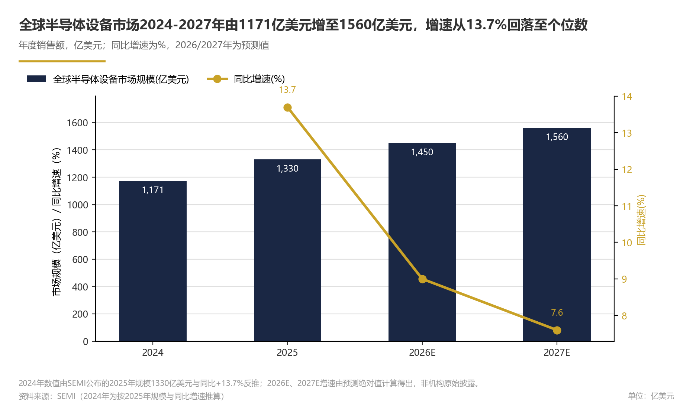
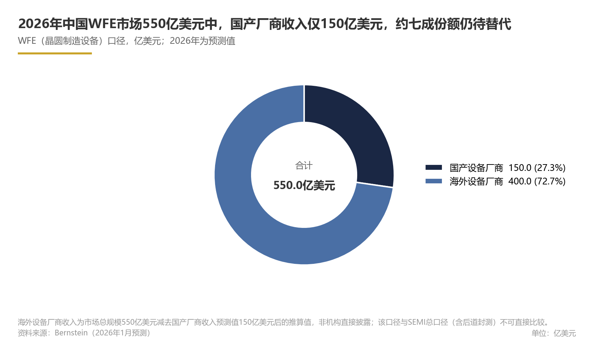
产业链结构与瓶颈：上游核心零部件、中游整机与下游晶圆厂
半导体设备行业已形成高度专业化、全球化分工的产业链结构：上游核心零部件与子系统决定设备性能上限，中游整机厂商主导技术集成与市场格局，下游晶圆厂资本开支构成设备需求的直接来源。
需要说明的是，上述判断基于当前数据与产业趋势，置信度为中等；若下游扩产不及预期或技术路线发生替代性变化，产业链重构节奏可能放缓。
论证与分析
上游核心零部件：设备性能的源头与自主可控的硬约束
半导体设备的技术壁垒高度集中于上游核心零部件与子系统。以光刻机为例，其光学系统是决定分辨率与套刻精度的最关键子系统，全球高端光刻机光学系统主要由德国蔡司（Zeiss SMT）供应，ASML的极紫外（EUV）光刻机光学系统即由蔡司独家配套，这一配套关系构成ASML在高端光刻领域近乎垄断地位的重要技术基础。据《海外半导体设备巨头巡礼系列：详解光刻巨人ASML成功之奥妙》报告梳理，ASML与蔡司的合作可追溯至20世纪80年代，双方通过深度绑定研发将光学系统性能推至物理极限，EUV光学系统的反射镜面粗糙度精度已达到原子级别。这一案例表明，整机厂商的全球竞争力与其上游核心零部件供应商的技术能力高度耦合，上游零部件并非可替代的标准化组件，而是设备差异化优势的根源。
在刻蚀、薄膜沉积等工艺设备领域，射频电源是产生等离子体的核心子系统，直接影响刻蚀速率、均匀性与工艺窗口。据公开产业链信息，恒运昌作为国内射频电源供应商，已进入拓荆科技、中微公司、北方华创、微导纳米、盛美上海等头部国产设备厂商的供应链，覆盖薄膜沉积与刻蚀两大核心工艺环节，表明国内企业在高端射频电源领域正逐步突破海外垄断。射频电源是刻蚀设备成本的重要组成部分，其国产化率的提升将直接改善国产设备整机的成本结构与供应链安全性。
此外，上游原材料价格波动会直接影响设备公司的盈利能力。综合来看，上游核心零部件涵盖光学系统、射频电源、精密运动控制、气体质量流量计、真空系统、高纯陶瓷等多个细分领域，单一零部件的供应中断都可能导致整机交付延迟，上游供应链的完整性与技术自主性是产业链安全的核心变量。
中游整机：九大品类、190种细分品种，市场集中度高企
中游整机是产业链的技术集成中心，将光学、机械、电气、软件等多学科技术整合为可稳定运行于晶圆厂量产环境的工艺设备。据中科院相关研究，前道制造装备主要包括光刻、干法刻蚀、掺杂、薄膜、平坦化、热处理、湿法、量测检测、工厂辅助设备等九大类，细分品种共约190种。不同制造工艺对设备精度、洁净度与稳定性的要求差异极大，导致单一企业难以覆盖全部品类，行业呈现"大者恒大、细分龙头主导"的竞争格局。
从价值量分布看，据东方证券数据，刻蚀设备约占集成电路芯片制造设备总资本开支的22%，是仅次于光刻机的第二大设备品类。据Fortune Business Insights数据，2025年全球半导体刻蚀设备市场规模为156.7亿美元，预计2034年将增至340.7亿美元，年复合增长率9.10%。这一增长动力主要来自先进制程的工艺步骤增加：在3nm及以下节点，刻蚀步骤数量较成熟制程显著增加，且三维结构（如GAA FET）对高选择性刻蚀提出了更高要求。刻蚀设备市场的持续扩容为头部厂商带来了稳定的增长空间，同时也吸引新进入者围绕特色工艺进行差异化突破。
从竞争格局看，全球半导体设备市场集中度较高，海外厂商在光刻、刻蚀、薄膜沉积、离子注入等主要品类仍处于垄断地位。中游整机企业的竞争力不仅体现于单一设备的性能指标，更体现于工艺配套能力——晶圆厂倾向于采购同一供应商的成套设备以降低工艺验证与维护成本，这种"生态锁定"效应进一步巩固了头部厂商的市场地位。
中国半导体设备厂商已基本覆盖各细分赛道，但国产化进程仍处于早期阶段。刻蚀、薄膜沉积领域，中微公司、北方华创等厂商在部分细分工艺已实现量产导入，刻蚀、薄膜沉积、清洗、热处理四大核心设备构成业绩支柱。国产设备厂商的成长路径清晰：以中低难度设备建立客户信任与收入基础，再向高端品类延伸。
下游晶圆厂：资本开支驱动需求，中国大陆成为全球扩产中心
下游晶圆厂的扩产节奏直接决定设备需求的景气度。
中国大陆设备市场的持续扩张主要受益于内资晶圆厂的建厂潮：成熟制程产能的规模化建设与先进制程的自主突破并行推进，带动了对刻蚀、薄膜沉积、清洗、热处理等各类设备的旺盛需求。
伯恩斯坦2026年1月预测显示，2026年中国WFE市场将达550亿美元，其中中国大陆设备厂商收入预计达150亿美元。这一增长趋势的核心驱动力来自三方面：一是存储芯片超级周期带来的资本开支上行，二是先进逻辑产线的设备投资密度提升，三是国产替代政策导向下内资晶圆厂对国产设备的采购倾斜。国产设备正在从"可替代选项"转变为"优先选项"，国产化率的提升正在加速兑现（推理性判断）。从全球视角看，据SEMI数据，2025年全球半导体设备市场规模为1330亿美元，同比增长13.7%；2026年全球半导体制造设备销售额预测为1560亿美元（推测性判断），2027年预测亦为1560亿美元；1450亿美元保留为参考（推测性判断），可能对应不同预测版本或未标注时间口径。增长主要得益于AI相关投资的推动，尤其是在尖端逻辑和存储领域的扩产。全球半导体终端市场与设备市场之间存在增速传导时滞，2025年全球半导体终端市场规模的高增长将陆续传导至设备端，支撑设备行业景气度在未来两年维持高位。
产业链瓶颈：上游高端零部件与下游产能结构性错配
当前产业链的核心瓶颈呈现出"上游高端受制、中游中端突破、下游需求外溢"的结构性特征。
上游端，高端光学系统、高精度射频电源、先进陶瓷部件等核心零部件的国产化率显著低于整机国产化率（推理性判断），形成"整机集成能力先行、零部件自主滞后"的剪刀差。以光刻机为例，即使整机集成取得突破，其光学系统仍需依赖进口，这一瓶颈将长期制约高端光刻机的自主可控进程。射频电源领域虽已有多家国产供应商实现配套，但面向极紫外光源、高功率脉冲等前沿应用的高端射频电源仍存在技术差距。
中游端，光刻机、离子注入机等高端品类国产化率仍处于较低水平，是最为突出的卡脖子环节。据产业链研究显示，前道制造装备九大品类中，光刻与离子注入的技术难度最高、验证周期最长，需要光学、精密运动控制、软件算法等多学科长达十年以上的持续攻关。
这种错配一方面意味着国产替代空间巨大，另一方面也意味着产业链安全面临外部管制加码的风险（推理性判断）——美国持续升级对华半导体制造设备的出口管制，先进制程设备的获取难度不断增加，倒逼国产设备加速向高端迈进。
前瞻分析：未来一段时期产业链重构的三条主线
基于当前数据与产业趋势，未来一段时期半导体设备产业链的重构将沿三条主线展开，我们对产业链关键变量给出以下基于情景假设的预判：
主线一：国产零部件配套从"可用"走向"好用"，射频电源与光学部件率先放量。鉴于当前配套率与市场规模缺乏公开精确统计，上述预判存在较大不确定性。光学系统方面，作为情景假设（推测性判断），国产KrF光刻机光学系统的量产导入可能在未来一段时期内取得阶段性进展，但EUV级光学系统仍将依赖进口，这一判断基于蔡司与ASML长达数十年的研发绑定关系难以在中短期内被复制。
主线二：中游整机国产化率从"量变"走向"质变"，存储扩产成为关键试验场。 考虑到2026-2027年全球存储资本开支进入超级周期，且存储工艺对设备的精度要求略低于先进逻辑，国产设备有望在存储产线获得更大份额。
主线三：下游需求结构从"扩产驱动"转向"技术驱动"，先进封装设备成为第三增长极。随着Chiplet在高性能计算领域渗透率的提升（推测性判断），先进封装设备的资本开支占比将持续上行，为国产设备厂商提供差异化竞争的新赛道。对于产业链参与者而言，建议设备厂商优先布局混合键合、临时键合/解键合等先进封装设备，零部件厂商则应围绕等离子体控制、高精度运动平台等共性技术进行专利布局，以对冲单一客户集中度风险。
数据支撑
深度模式数据表
Exhibit 3｜产业链结构与瓶颈：上游核心零部件、中游整机与下游晶圆厂
| 环节 | 主要供应商 | 配套关系 | 期间 | 来源 |
|---|---|---|---|---|
| 光学系统 | Zeiss SMT | supplier（客户：ASML） | 2026 | [链接](https://pdf.dfcfw.com/pdf/H3_AP202410151640308315_1.pdf?1729025931000.pdf) |
| 射频电源 | 恒运昌 | supplier（客户：拓荆科技、中微公司、北方华创、微导纳米、盛美上海） | 2026 | [链接](https://www.21jingji.com/article/20260128/herald/cb0e3862a18f723ec88bd5c1427e3358.html) |
注：光学系统配套关系基于ASML供应链公开信息；射频电源客户名单来源于企业公开披露与产业链调研。
产业链关键指标汇总
Exhibit 4｜产业链结构与瓶颈：上游核心零部件、中游整机与下游晶圆厂
| 指标 | 数值 | 口径 | 期间 | 来源 |
|---|---|---|---|---|
| 全球半导体设备市场规模 | 1330亿美元 | SEMI总口径 | 全球，2025年 | SEMI |
| 全球半导体设备市场规模增速 | 13.7% | SEMI总口径 | 全球，2025年同比 | SEMI |
| 全球半导体制造设备销售额预测 | 1560亿美元 | SEMI总口径 | 全球，2026年预测 | SEMI |
| 全球半导体制造设备销售额预测（参考值） | 1450亿美元 | SEMI总口径 | 全球，2026年预测 | SEMI |
| 全球半导体制造设备销售额预测 | 1560亿美元 | SEMI总口径 | 全球，2027年预测 | SEMI |
| 中国大陆半导体设备销售额 | 495.4亿美元 | SEMI总口径 | 中国大陆，2024年 | SEMI |
| 中国大陆占全球设备市场比重 | 42.29% | SEMI总口径 | 中国大陆，2024年 | SEMI |
| 中国WFE市场预测 | 550亿美元 | WFE口径 | 中国，2026年预测 | 伯恩斯坦 |
| 中国大陆设备厂商收入预测 | 150亿美元 | 中国大陆厂商收入口径 | 2026年预测 | 伯恩斯坦 |
| 中国半导体设备整体国产化率 | 20%-25% | 全口径设备国产化率 | 中国，2024年 | 产业链研究 |
| 清洗热处理设备国产化率 | 50%-70% | 分品类国产化率 | 中国，2024年 | 产业链研究 |
| 前道制造装备分类数量 | 9类 | 前道制造装备 | 全球/中国 | 中科院 |
| 前道制造装备细分品种数量 | 190种 | 前道制造装备 | 全球/中国 | 中科院 |
| 刻蚀设备占芯片制造设备资本开支比重 | 22% | WFE口径 | 全球 | 东方证券 |
| 全球半导体刻蚀设备市场规模 | 156.7亿美元 | 刻蚀设备 | 全球，2025年 | Fortune Business Insights |
| 全球半导体刻蚀设备市场规模预测 | 340.7亿美元 | 刻蚀设备 | 全球，2034年预测 | Fortune Business Insights |
| 先进封装设备市场规模预测 | 420亿美元 | 先进封装设备 | 全球，2026年预测 | GEP Research |
| 混合键合设备细分市场增长率预测 | >25% | 混合键合设备 | 全球，2026年预测 | GEP Research |
产业链结构图谱
上游核心零部件（光学系统、射频电源、精密运动控制、真空系统、高纯材料等）
↓ 供应
中游整机（九大类190种：光刻、刻蚀、薄膜沉积、掺杂、平坦化、热处理、湿法、量测检测、工厂辅助）
↓ 采购
下游晶圆厂（逻辑代工、存储制造、功率与模拟、先进封装）风险提示
口径差异风险：本章涉及的半导体设备市场数据存在多种统计口径，SEMI总口径、WFE口径与广义设备口径之间存在统计边界差异（如是否包含测试设备、封装设备、零部件等），不同数据源（SEMI、Fortune Business Insights、德勤、伯恩斯坦）的数据差异主要源于此，引用时应统一口径。
上游零部件数据颗粒度风险：射频电源、光学系统等上游零部件环节的公开市场规模数据有限，本章相关判断更多基于产业链调研和企业公告，存在颗粒度不足与口径不一致的可能。
预测不确定性风险：SEMI、伯恩斯坦等机构的前瞻预测基于特定假设（如AI投资强度、存储扩产节奏、地缘政治环境），若美国出口管制进一步升级或全球宏观经济走弱，2026-2027年实际设备销售额可能低于预测值。前瞻分析中关于国产化率提升和射频电源配套率提升的预判，均依赖晶圆厂扩产如期落地与国产设备验证导入周期不延长的前提假设，若验证周期显著延长，相关预判实现时间将相应推迟。若下游扩产不及预期，或出现技术路线变化（如先进封装对传统设备的替代效应减弱、Chiplet渗透放缓），产业链重构节奏可能慢于预期。
产业链瓶颈动态变化风险：上游核心零部件的国产化突破速度可能因技术难度、客户验证周期与外部管制力度而低于预期；下游晶圆厂产能建设也可能因终端需求波动而调整资本开支计划，进而影响设备需求的传导时滞。
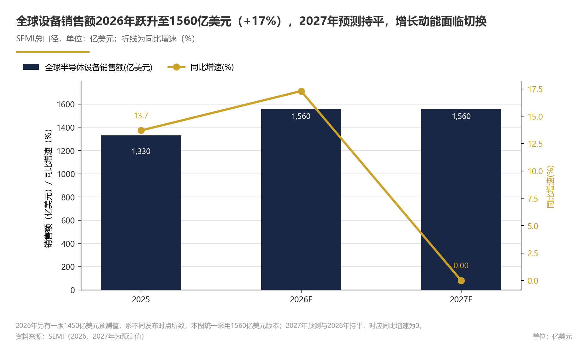
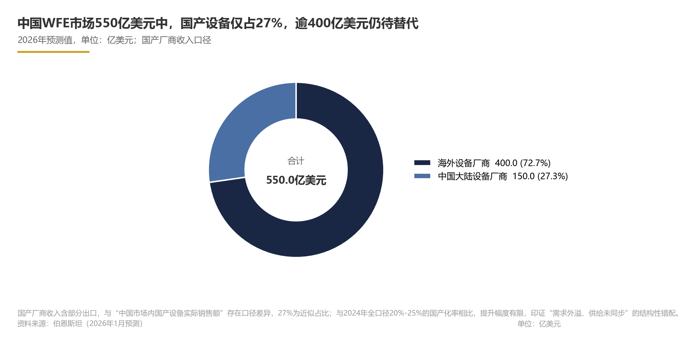
竞争格局：全球及中国市场份额、集中度与国产化率
论证与分析
全球竞争格局：海外龙头主导，市场集中度维持高位
据SEMI数据，2025年全球半导体设备市场规模达1330亿美元。全球半导体设备行业是典型的寡头垄断市场（基于行业共识的推断性判断）。从产业链分工看，设备环节的技术壁垒和客户认证壁垒远高于一般制造环节，头部企业凭借长期技术积累、专利护城河和与晶圆厂的深度绑定，形成了稳固的市场地位。
需说明的是，关于主要设备厂商在全球市场中的精确份额，公开量化数据有限，以下判断基于行业共识与定性证据。
从区域分布看，美国、日本、荷兰三国构成了全球半导体设备产业的核心版图（基于行业共识的推断性判断）。美国半导体协会（SIA）数据显示，2024年美国拥有全球近一半的半导体产品市场份额，占比为50.4%，排名第一，其后依次为韩国、日本等。虽然该口径统计的是广义半导体产品而非单纯的设备销售，但一定程度上反映了美国在半导体产业链高端环节的主导能力。在设备领域，美国应用材料、泛林、科磊，日本东京电子、爱德万，荷兰ASML等企业分别在薄膜沉积、刻蚀、量检测、光刻、测试等关键环节占据领先地位（基于行业共识的推断性判断）。
市场集中度的另一个体现是细分环节的高度聚焦。据中科院研究，前道制造装备共包括光刻、干法刻蚀、掺杂、薄膜、平坦化、热处理、湿法、量测检测、工厂辅助设备等九大类，细分品种约190种，每种设备的技术门槛和验证周期差异显著。由于光刻机、刻蚀机、薄膜沉积设备是晶圆制造资本开支中占比最高的三大类设备，这些领域的竞争格局直接决定了全球设备市场的整体结构。以刻蚀设备为例，其约占芯片制造设备总资本开支的22%（据东方证券），全球市场据行业共识主要由泛林、东京电子和应用材料三家主导（推断性判断）；光刻机市场据行业共识由ASML一家独大，在高端EUV领域几乎形成独家供应（推断性判断）。这种“少数玩家主导大市场”的结构，使得新进入者在技术和客户两端都面临极高的替代成本。
地缘政治因素正在加速全球设备供应链的重构。
据公开政策梳理，美国自2022年以来多次升级对华先进计算和半导体设备制造的出口管制（时间范围：2022年至今），限制中国获取先进制程所需的关键设备与技术。
巨大的市场需求并未同步转化为本土厂商的国内份额。而光刻、离子注入等高端设备仍高度依赖进口，国产化率处于较低水平（该领域公开量化数据有限）。
伯恩斯坦2026年1月的预测进一步勾勒出中国设备厂商的成长轨迹：预计2026年中国WFE市场约550亿美元（伯恩斯坦），其中中国大陆设备厂商收入预计达150亿美元，同比增长36%。据伯恩斯坦预测数据推算（以中国大陆设备厂商总收入近似其在华销售额），2026年中国本土厂商在中国WFE市场中的份额约为27.3%（推算）。需注意，该口径以总收入近似在华销售额，可能高估本土厂商在华份额；这一增速表明国产设备正在从“可替代”走向“加速替代”阶段。
两者分属不同年份与统计对象，不宜直接对比；中国WFE市场整体增速的公开数据亦有限。
集中度与结构分化：低端突破与高端攻坚并行
中国半导体设备市场的竞争格局并非铁板一块，而是呈现出鲜明的结构性分化特征。
该数字反映的是本土与海外厂商之间的整体供给结构，即国产化率的镜像，而非供给方集中度；寡头格局应由前几家厂商的CRn指标衡量，两者不可混同。分环节看，海外龙头在光刻、离子注入等环节仍处于绝对主导地位（基于行业共识的推断性判断）；在刻蚀、薄膜沉积等环节仍占优势，但国产厂商已形成实质竞争（基于行业共识的推断性判断）；在清洗、热处理等环节，国产厂商已占据半数以上份额（推算，基于产业链研究数据）。
这种梯度分化表明，中国设备市场的竞争结构并非均质，而是随技术难度呈现明显的层级差异。
首先，从产品环节看，国产设备已形成“由易到难、逐级突破”的阶梯式格局。北方华创、中微公司、盛美上海、拓荆科技、华海清科等头部厂商分别在刻蚀、薄膜沉积、清洗、CMP等细分赛道实现批量出货，并以此构成主要收入来源，但各家企业的具体营收结构与细分市场占有率公开数据有限，尚难以精确量化。其中，刻蚀与薄膜沉积是中外厂商交锋最集中的“主战场”：海外泛林、东京电子、应用材料据行业共识仍居主导，中微公司、北方华创、拓荆科技等已进入主流晶圆厂产线并持续扩大工艺覆盖范围（推断性判断），这一环节的份额变化将直接决定整体国产化率的提升斜率。整体来看，国产设备厂商已具备成体系的整机供给能力，而非局限于单一环节的配套替代。相比之下，光刻机作为技术难度最高的设备品类，仍处于研发攻关阶段，EUV光刻、高端量检测、离子注入等环节与海外先进水平存在明显代差（推断性判断）。
其次，从市场参与者看，中国设备行业呈现“一超多强+新锐涌现”的竞争态势（推断性判断）。北方华创、中微公司、盛美上海、拓荆科技、华海清科等企业分别在刻蚀/薄膜、刻蚀、清洗、薄膜沉积、CMP等细分赛道建立起差异化优势（推断性判断，公开结构化数据有限）。中国厂商已基本覆盖半导体设备各细分赛道（推断性判断），但多数企业仍处于“单点突破”阶段，尚未出现能够覆盖全产品线的平台型巨头。
再次，从需求结构看，先进封装正在成为国产设备竞争的新增量。
前瞻：未来一段时期国产化率提升的逻辑与空间
基于当前数据趋势，我们对中国半导体设备竞争格局的未来演变做出如下预测（预测性判断）：
预测：2026-2027年中国本土设备厂商在中国WFE市场中的收入份额将保持较快提升（预测性判断）。 核心假设包括：一是2026年中国WFE市场规模约550亿美元（伯恩斯坦预测），且内资晶圆厂扩产计划如期落地；二是出口管制维持现有力度，不出现显著放松或进一步升级的极端情形；三是国产设备在刻蚀、薄膜沉积、清洗、CMP等已突破环节的量产验证持续推进。在此基准情景下，2027年中国设备厂商在中国WFE市场中的份额有望较2026年进一步提升（预测）。乐观情景下，若国产设备验证导入加速、先进封装增量超预期，份额提升速度可能更快；悲观情景下，若下游资本开支不及预期或管制出现阶段性缓和，份额提升速度可能放缓。对于晶圆厂而言，在成熟制程扩产中优先导入已验证的国产设备，可有效降低供应链风险与采购成本；对于设备厂商而言，应把握先进封装和混合键合带来的增量窗口，以及成熟制程国产替代的存量替换机遇。
然而，高端环节的突破速度存在较大不确定性。光刻、高端量检测、离子注入等环节的技术追赶周期通常以五年甚至十年计，且高度依赖上游零部件、材料和工艺生态的协同发展。刻蚀、薄膜沉积、CMP等“中间地带”环节正处于份额爬坡期，是未来一段时期整体国产化率提升的主力（推断性判断）；光刻、离子注入等高端环节国产化率仍处低位，短期对整体数字的拉动有限。因此，国产化率提升将呈现“中低端快速放量、高端渐进突破”的非线性节奏。投资者和产业规划者应将国产化率目标拆解至环节层面，而非以整体数字作为单一考核指标。
数据支撑
下表汇总了本章涉及的关键数据及其来源。全球半导体设备市场规模存在不同统计口径，SEMI与Fortune Business Insights的数值差异主要源于统计边界和定义边界不同，本章统一采用SEMI口径。公司层面具体市场份额的公开结构化数据有限，故无法在本章给出各家厂商的精确市占率数值，相关判断基于定性证据推断。
Exhibit 5｜竞争格局：全球及中国市场份额、集中度与国产化率
| 指标 | 数值 | 口径/期间 | 来源 | 认知层级 |
|---|---|---|---|---|
| 全球半导体设备市场规模 | 1330亿美元 | 2025年 | SEMI | 事实（统计口径） |
| 全球半导体设备市场规模增速 | 13.7% | 2025年同比 | SEMI | 事实（统计口径） |
| 中国大陆半导体设备销售额 | 495.4亿美元 | 2024年 | SEMI | 事实（统计口径） |
| 中国大陆占全球设备市场比重 | 42.29% | 2024年 | SEMI | 事实（统计口径） |
| 中国半导体设备市场规模 | 559亿美元 | 2025年 | 德勤 | 预测（白皮书） |
| 中国WFE市场规模预测 | 550亿美元 | 2026年 | 伯恩斯坦 | 预测 |
| 中国大陆设备厂商收入预测 | 150亿美元 | 2026年 | 伯恩斯坦 | 预测 |
| 中国大陆设备厂商收入同比增速 | 36% | 2026年 | 伯恩斯坦 | 预测 |
| 中国半导体设备整体国产化率 | 20%-25% | 2024年 | 产业链研究 | 推算 |
| 清洗/热处理设备国产化率 | 50%-70% | 2024年 | 产业链研究 | 推算 |
| 刻蚀设备占芯片制造设备资本开支比重 | 22% | — | 东方证券 | 统计（研究测算） |
| 前道制造装备分类数量 | 9类 | — | 中科院 | 事实 |
| 前道制造装备细分品种数量 | 190种 | — | 中科院 | 事实 |
| 先进封装设备市场规模预测 | 420亿美元 | 2026年 | GEP Research | 预测 |
| 混合键合设备细分市场增长率 | >25% | 2026年预测 | GEP Research | 预测 |
| 美国半导体产品全球份额 | 50.4% | 2024年 | SIA | 事实（统计口径） |
风险提示
本章分析面临以下不确定性与数据限制，需在使用结论时予以关注：
1.公司层面市场份额，寡头格局判断置信度受限。由于公司份额数据缺失，本章“寡头格局”相关判断的置信度为中等至较低，仅为方向性判断。 若后续获得SEMI、Gartner或公司公告等来源的份额数据，可进一步细化竞争格局分析。2.统计口径差异可能导致国产化率高估或低估。3.出口管制政策的不可预测性。 美国对华半导体设备出口管制的具体范围、执行力度和豁免条款存在动态调整可能，若管制进一步加严，国产设备验证导入节奏可能加快，但高端零部件的获取也将更加受限；若管制出现阶段性缓和，国产替代的紧迫性可能阶段性弱化。4.下游资本开支波动风险。
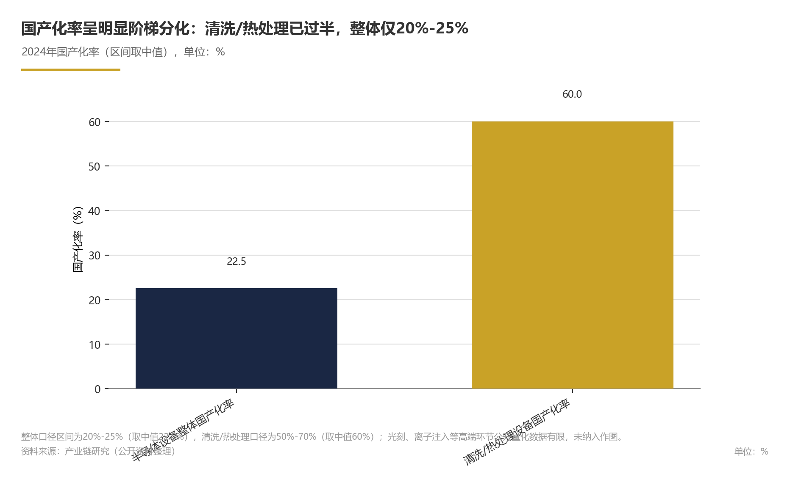
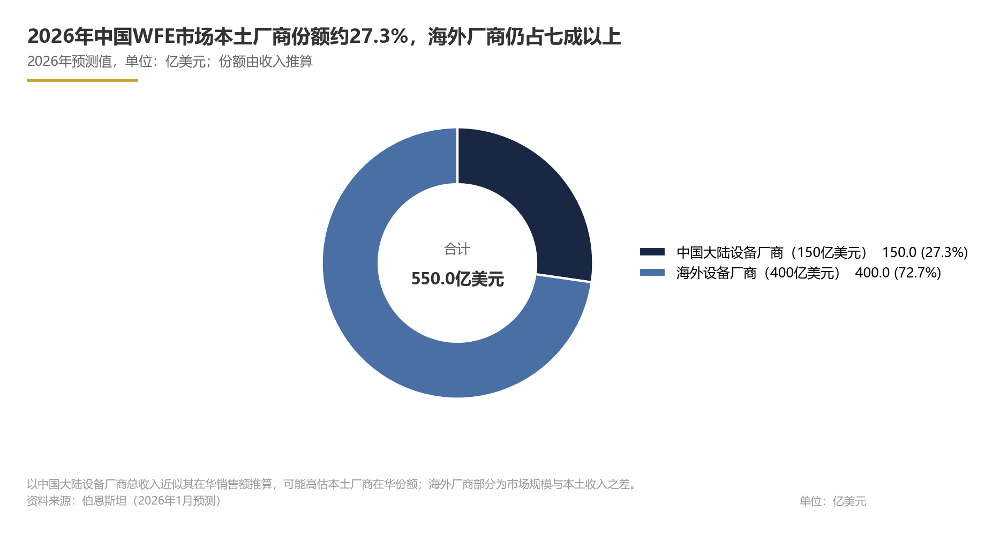
技术路线与创新：光刻、刻蚀、薄膜沉积等设备演进与核心部件成本结构
光刻、刻蚀、薄膜沉积是前道三大核心设备，其中刻蚀设备约占全球芯片制造设备资本开支的22%（事实性判断）；在设备BOM成本结构中，光学类部件占半导体设备BOM成本比重为55.0%（Supplyframe，事实性判断；该口径为整体设备成本结构，非各设备类型一致值），是决定设备性能上限的关键变量；从国产替代角度看，光学类部件的本土供给进度同样是决定高端设备自主可控节奏的关键环节。
论证与分析
1. 三大主线的技术演进：从单机参数向系统协同迁移
晶圆制造通常包含沉积、光刻、刻蚀、离子注入等核心步骤，前道制造装备涵盖光刻、干法刻蚀、掺杂、薄膜、平坦化、热处理、湿法、量测检测、工厂辅助设备等九大类，细分品种约190种（中科院，事实性判断）。其中，光刻、刻蚀、薄膜沉积被公认为三大核心设备，主导着前道设备市场的技术迭代与价值量分布。
光刻设备是所有半导体制造设备中技术含量最高的环节，包含大量精密零部件（行业通识约上万件），其光源波长与物镜数值孔径直接决定晶圆产线可达到的工艺节点。光源路线从i线、KrF（248nm）、ArF（193nm）推进至EUV（13.5nm），下一代高NA EUV进一步压缩套刻精度余量，使光学系统的复杂度与成本持续攀升。EUV光刻机的光源系统需将激光驱动等离子体产生的13.5nm极紫外光聚焦至晶圆，系统复杂度与能耗远超前代，单台设备价值量显著推高前道设备的平均单价（推理性判断）。光刻机的性能直接决定晶圆产线的工艺能力，是晶圆厂扩产决策中最具战略意义的设备采购项。
刻蚀设备承担图形转移功能，是光刻之后的关键工序，通过物理或化学方法有选择地去除晶圆表面材料，使目标图形精确显现。主流的干法刻蚀利用等离子体实现各向异性刻蚀，在先进逻辑制程与3D NAND堆叠结构中，刻蚀步骤的数量与难度显著提升。刻蚀设备约占全球集成电路芯片制造设备总资本开支的22%（东方证券，事实性判断），全球刻蚀设备市场2025年规模为156.7亿美元，预计2034年达340.7亿美元，年复合增长率9.10%（Fortune Business Insights，推测性判断）。
薄膜沉积设备以CVD、PVD、ALD三大技术路线为主，通过逐层构建薄膜为器件提供介电层、金属互连与阻挡层。其中ALD以原子层精度控制膜厚与台阶覆盖性，在先进逻辑栅极叠层与3D NAND沟槽填充环节的地位持续提升。从工艺适用性看，CVD适合大面积、高效率的薄膜沉积，PVD适合金属互连与阻挡层溅射，ALD则适合对膜厚均匀性与台阶覆盖性要求极高的关键层沉积。不同技术路线在成本、产能与工艺极限上各有取舍，设备厂商需要根据下游客户的技术节点与产品结构配置产品线（推理性判断）。据行业研究，薄膜沉积设备与刻蚀设备是半导体设备细分市场中占比最高的两大品类（推理性判断）。在3D NAND堆叠层数持续增加、逻辑制程向GAA结构迁移的背景下，沉积设备的工艺均匀性与缺陷控制要求不断抬高，单机价值量亦随之上升。
从技术路线的对比看，三类设备分别解决不同维度的工艺难题：光刻设备追求分辨率与套刻精度，决定图案的极限尺寸；刻蚀设备追求刻蚀速率、选择比与深宽比，决定图案转移的保真度与三维形貌；薄膜沉积设备追求膜厚均匀性、台阶覆盖性与薄膜应力控制，决定器件结构的电学可靠性。随着制程微缩与三维堆叠程度加深，三者之间的工艺约束日趋紧密——更高深宽比的存储结构既依赖光刻的多重曝光能力，也依赖刻蚀的高选择比和沉积的保形填充能力。因此，单项设备参数的领先不足以支撑整线工艺竞争力，设备厂商需要在“刻蚀-沉积-光刻”的协同窗口内寻找工艺裕量，这构成了系统级协同的技术基础（推理性判断）。
需要强调的是，随着制程节点缩小，光刻定义的图形必须由刻蚀精确转移、并由沉积材料填补三维结构，三项工艺的工艺窗口相互耦合，设备创新正从单机参数提升转向"刻蚀-沉积-光刻"的系统级协同。设备厂商的竞争维度也从单纯的光源精度、刻蚀速率或沉积均匀性，扩展至工艺解决方案的整体匹配能力（推理性判断）。
2.
半导体设备的BOM成本主要由精密零部件构成，零部件供应链决定设备的性能上限与毛利空间。据Supplyframe数据，光学类部件在全球半导体设备成本结构中占比55.0%（事实性判断）。这一高占比主要反映光刻机、量检测等光学主导型设备的成本分布——光刻机包含大量精密零部件（行业通识约上万件），光源系统、投影物镜、精密工件台等光学与精密运动部件构成核心价值；在刻蚀、薄膜沉积等非光学主导设备中，成本可能更多集中于射频电源、气体质量流量控制、真空反应腔等子系统（推测性判断，推断依据是刻蚀设备的核心功能为等离子体刻蚀，其价值量集中于等离子体源与反应腔系统），但光学类部件在套刻对准、线宽测量等环节仍然不可或缺（推理性判断）。
进一步作成本结构的情景推演：以BOM总成本为100单位，光学类部件约占55单位，其余部件合计约占45单位。在光刻、量检测等光学主导型设备中，光源系统、投影物镜与精密工件台可能构成光学成本的主体，整机BOM高度集中于光学链路；在刻蚀、薄膜沉积等非光学主导型设备中，射频电源、气体质量流量控制、真空反应腔等子系统可能占据主要成本，光学类部件则主要用于套刻对准与线宽测量等辅助功能。这一差异意味着，零部件国产替代不能以单一比例套用于所有设备，而应针对设备类型拆解BOM结构，优先突破各自的价值量核心：光刻设备的国产化瓶颈集中于光学设计与精密加工，刻蚀设备集中于射频与真空系统，薄膜沉积设备集中于前驱体输送与反应腔温度控制（推理性判断）。
除光学类部件外，射频电源、精密运动系统、气体与真空子系统、静电吸盘与陶瓷部件等亦构成设备BOM的重要组成；其中射频电源与反应腔体部件可能同样存在供给瓶颈（推理性判断）。就国内设备而言，该瓶颈也会制约刻蚀、薄膜沉积设备的自主可控。总体而言，设备成本结构的核心特征是"少品种、高价值、强定制"，单一关键零部件的认证失败可能导致整机交付延迟，这使得零部件环节成为设备产业链中议价能力最强、卡脖子风险最集中的层级。
从供应链管理维度看，半导体设备零部件具有小批量、多品种、高验证门槛的特征。以光刻机为例，其光源系统需要在极紫外波段保持稳定输出，物镜系统的面形精度要求达到亚纳米级，这些部件的加工与检测均依赖专用设备和长期工艺积累。
光学类部件的国产化进度，与整机国产化的梯度高度相关。率先突破的清洗、热处理设备对光学类部件依赖度相对较低，而卡脖子的光刻、量检测设备恰恰是光学BOM占比最高的品类。从设备类型看，清洗设备的核心功能是去除颗粒与金属污染，其BOM以药液输送系统、兆声波发生器和干燥模块为主；热处理设备的成本集中于加热腔体与温度控制系统。这些设备对光学类部件的依赖度相对较低，因此国产化推进速度更快。与之对比，光刻设备与量检测设备的核心功能直接依赖光学测量与成像，光学类部件占比高，国产化难度相应更大（推理性判断）。国内头部设备公司的业务结构也验证了这一逻辑——刻蚀、薄膜沉积、清洗、热处理四大核心设备构成业绩支柱（推理性判断）。因此，光学类零部件的认证与量产进度，将在很大程度上决定高端设备自主可控的节奏。
3. 创新焦点向先进封装转移：混合键合开启设备新赛道
在后摩尔时代，先进封装成为延续芯片性能提升的重要路径，设备创新焦点正在从单纯的前道参数竞赛扩展至先进封装领域。据GEP Research数据，2026年先进封装设备市场规模预计达420亿美元，同比增长约9%；混合键合将芯片间互连从微凸点推进至铜-铜直接键合，对设备平台的对准精度、表面平整度与粒子控制提出原子级要求，单位价值量高于传统封装设备（推理性判断）。先进封装设备涵盖贴片、键合、塑封、测试等环节，其中混合键合是增速最快、技术门槛最高的细分方向，其设备能力直接决定异构集成方案的可行性与良率水平。
从技术维度看，混合键合设备与传统封装设备的核心差异在于对准与键合控制系统。混合键合要求极高精度的光学对准模块、表面活化与键合压力控制能力，同时对环境粒子控制与晶圆翘曲补偿的要求也远高于传统封装设备。这使混合键合设备的技术研发投入与工艺验证周期更长，设备价值量相应高于传统封装设备（推理性判断）。混合键合设备的能力建设不仅涉及单一设备，还要求与刻蚀、沉积设备形成工艺闭环：铜-铜键合前的表面活化与清洗工艺、键合后的退火工艺都会影响互连可靠性。因此，具备前道工艺协同能力的设备厂商在混合键合赛道上具有天然优势（推理性判断）。
在AI芯片与高端异构计算需求驱动下，设备采购逻辑正从"单机规格"转向"工艺解决方案"，具备刻蚀、沉积、键合工艺协同能力的厂商有望获得更高的份额溢价（推理性判断）。这一转变意味着设备企业的研发组织方式需从单一产品线转向平台化工艺开发，与晶圆厂、封装厂联合验证工艺窗口，技术护城河将从硬件参数扩展到工艺know-how积累。
4.
基于SEMI预测，全球半导体制造设备销售额预计达1560亿美元（推测性判断），增长主要由AI相关投资驱动的尖端逻辑与存储扩产贡献（推测性判断）；存储扩产将直接拉动刻蚀与薄膜沉积设备订单（推测性判断）。二是3D NAND高深宽比刻蚀与沉积设备，堆叠层数增加直接拉动设备需求量与单位价值量；该领域公开数据有限。
对利益相关方的行动含义：设备厂商应优先在已验证的刻蚀、薄膜沉积、清洗赛道扩充产品线并向高端延伸，同时布局混合键合等新赛道；零部件企业应聚焦光学类部件（BOM占比55.0%）——这是弹性最大的国产替代方向，建议沿光源系统、物镜与精密运动台三个子方向推进验证与量产；下游晶圆厂与投资者应关注混合键合设备产能的稀缺性，该环节的产能锁定与供应商认证节奏可能在未来两年成为竞争焦点（推测性判断）。
这将影响设备厂商与零部件企业的资源投放优先级：中低难度环节的竞争将转向成本与供应链效率，高端环节的竞争则取决于核心零部件的认证节奏与工艺know-how积累。三条投资主线并非彼此孤立：高NA EUV带来的图案微缩将放大刻蚀与沉积的工艺窗口压力，3D NAND堆叠层数增加则同时考验刻蚀的深宽比与沉积的保形性，而混合键合技术又依赖前道设备提供的平整表面与薄膜质量。设备厂商需要在三条主线之间寻找共通的技术平台能力，以对冲单一环节的周期性波动（推理性判断）。
数据支撑
深度模式数据表
Exhibit 6｜技术路线与创新：光刻、刻蚀、薄膜沉积等设备演进与核心部件成本结构
| 系统 | 部件 | 成本占比 | 关键供应商 | 技术路线/备注 | 来源 |
|---|---|---|---|---|---|
| 半导体设备 | 光学类 | 55.0% | Supplyframe | ||
| 设备成本结构 | 光学类 | 55.0% | Supplyframe |
注：表中55.0%为估算值，来自单一机构口径，更适用于光刻、量检测等光学主导型设备；该比例在刻蚀、薄膜沉积等设备中的实际占比存在差异。
关键技术指标
Exhibit 7｜技术路线与创新：光刻、刻蚀、薄膜沉积等设备演进与核心部件成本结构
| 指标 | 数值 | 口径/期间 | 来源 |
|---|---|---|---|
| 光学类部件占半导体设备BOM成本比重 | 55.0% | 设备成本结构 | Supplyframe |
| 刻蚀设备占芯片制造设备资本开支比重 | 22% | 集成电路制造 | 东方证券 |
| 全球半导体刻蚀设备市场规模 | 156.7亿美元 | 2025年 | Fortune Business Insights |
| 全球半导体刻蚀设备市场规模预测 | 340.7亿美元 | 2034年 | Fortune Business Insights |
| 全球半导体刻蚀设备市场年复合增长率 | 9.10% | 2025-2034年 | Fortune Business Insights |
| 前道制造装备分类数量 | 9类 | 中科院统计口径 | 中科院 |
| 前道制造装备细分品种数量 | 190种 | 中科院统计口径 | 中科院 |
| 先进封装设备市场规模预测 | 420亿美元 | 2026年 | GEP Research |
| 先进封装设备市场规模增速 | 9% | 2026年预测 | GEP Research |
| 混合键合设备细分市场增长率 | >25% | 2026年预测 | GEP Research |
| 工程塑料占半导体设备生产成本比重 | 10%-20% | 生产成本 | 亿欧 |
| 中国半导体设备整体国产化率 | 20%-25% | 2024年 | 产业链研究 |
| 清洗/热处理设备国产化率 | 50%-70% | 2024年 | 产业链研究 |
| 全球半导体制造设备销售额预测 | 1560亿美元 | 2026年 | SEMI |
| 全球半导体制造设备销售额预测 | 1560亿美元 | 2027年 | SEMI |
风险提示
本章分析存在以下不确定性：其一，光学类部件占设备BOM成本55.0%的数据来自单一机构Supplyframe，统计口径为整体设备成本结构，未区分设备类型；在刻蚀、薄膜沉积等非光学主导型设备中，光学类部件占比可能明显低于该值。其二，刻蚀设备市场规模与增速预测（CAGR 9.10%）为Fortune Business Insights模型外推结果，实际增速受AI资本开支节奏、存储扩产进度影响。其三，先进封装设备与混合键合增速预测隐含Chiplet渗透率快速提升的前提，若异构集成良率提升与成本下降不及预期，需求释放可能延后。其四，国产化率数据多为产业链研究推算，不同统计口径差异较大，光刻、量检测等高壁垒环节的实际突破进度可能慢于市场预期。其五，出口管制政策若进一步升级，可能改变设备技术演进路径与采购结构，本章未对政策情景进行量化模拟。
该领域公开数据有限。
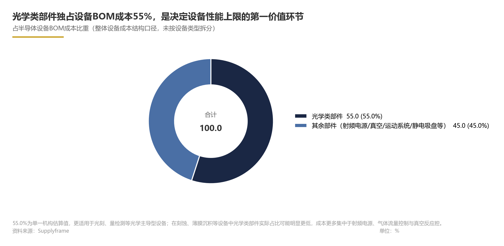
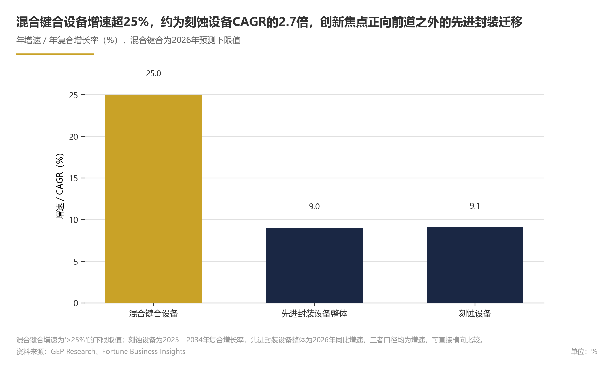
政策与监管：出口管制、产业支持政策与合规要求
论证与分析
美国出口管制：从单点限制到全链条封锁
2022年10月：管制框架的奠基
2022年10月7日，美国商务部产业安全局（BIS）以临时最终规则形式在《联邦公报》发布《出口管理条例》修订文本，将31家中国实体列入"未经核实清单"，并对中国先进芯片制造、半导体设备制造及超算行业实施全面且精准的打击。该轮管制首次引入"先进制程节点"与"终端用途"双重判定标准，对涉及先进制程的芯片制造设备实施许可证管理，从源头上限制中国晶圆厂获取先进设备的能力。香港贸发局研究指出，该轮措施旨在限制中国获得先进计算芯片、开发和维护超级电脑以及制造先进半导体的能力，管制对象从单一产品扩展至整个先进制造能力体系。由此，2022年规则确立了此后历轮管制的基础框架，后续规则调整均在此基础上进行修补与延伸（推理性判断）。
2023年10月：管制范围的补漏与延伸
2023年10月17日，BIS就先进计算芯片、超级计算机和半导体制造设备发布两项新的临时最终规则。新规扩大了对半导体生产和制造设备的管制范围，适用于向D:5国家组别（含澳门）出口、再出口或转移的物项，同时增设"美国人"许可证要求——美国人在中国半导体制造设施开发或生产特定集成电路需获得许可。这一修订将管制边界从"物项"延伸至"人"，显著扩大了域外管辖范围：不仅美国设备的出口受到限制，任何使用美国技术、软件或人才支持的先进晶圆厂项目都将面临合规障碍。业界普遍将此轮修订视为对2022年规则执行漏洞的系统性修补，标志着美国出口管制从"产品导向"转向"生态导向"。生态导向的核心特征是将管制对象从具体设备产品扩展至支撑其研发、生产与维护的技术流、人才流与服务流（事实性判断）。
2024年以来：动态补丁与精准打击
2024年以后，美国管制政策的迭代节奏从"年度大修"转向"动态补丁"，管制重点向先进封装、HBM相关设备及核心零部件延伸。从产业与投资视角审视，美国出口管制的规制逻辑已从"防扩散"转向"技术脱钩"，其政策目标不再局限于阻止特定产品出口，而是系统性地削弱中国在半导体制造全链条的技术获取能力（推理性判断）。从实际影响看（推断性判断），管制的作用不仅在于限制新设备流入，更在于通过切断维护、升级与备件供应体系，削弱中国已购进口设备的持续运行能力，进而抬高中国半导体制造的长期运营成本与不确定性。从设备运行角度看，先进制程设备的维护、备件供应和软件升级通常由原厂或授权服务商提供，一旦相关服务被纳入管制范围，已购设备的可用性和产出效率将受到侵蚀；这一影响在缺乏本土替代服务能力的环节尤为显著（推断性判断）。目前公开信息尚未提供充分的维保断供案例统计，这一影响应视为基于管制逻辑的推断。
国际协同：美欧日出口管制的联动与差异
美国对华半导体出口管制的实际效力，在很大程度上取决于盟友的协同程度。日本与荷兰作为全球高端半导体设备的重要供应方，已通过各自出口管制框架对高端光刻、沉积等设备实施限制，与美国形成多边协同态势（事实性判断）。在具体操作上，日本的管制以最终用户清单和特定物项许可为核心，荷兰则将高端光刻系统纳入许可范围，二者与美国的实体清单机制在程序上并不完全一致，但在限制中国先进制程能力的目标上高度趋同。相比之下，欧洲国家更侧重两用物项清单的合规审查，在执法节奏与覆盖范围上与美国的"动态补丁"式调整存在差异（推断性判断）。这一协同-差异并存的格局意味着：中国设备企业不仅面临美国单边管制，还需应对多国监管框架叠加带来的合规复杂性（推测性判断）。
中国的政策对冲：合规框架与产业支持双轮驱动
出口管制合规框架的升级
面对外部管制压力，中国加速构建自身的出口管制法律体系。2024年9月18日，国务院第41次常务会议通过《中华人民共和国两用物项出口管制条例》，自2024年12月1日起施行。该条例为两用物项（涵盖半导体相关设备、材料与技术的出口管理）提供了上位法依据，标志着中国出口管制体系从部门规章向行政法规的层级跃升。条例明确了出口管制的适用范围、许可制度、执法机制与法律责任，为战略原材料（如镓、锗、稀土）及半导体相关物项的出口管理提供了法律工具。从制度建设的战略意义看（推测性判断），中国首次拥有了与国际出口管制体系相对称的法律武器，在政策博弈中具备了双向管制能力。这一能力的实质是：中国既可以通过限制战略原材料出口影响全球供应链，也可以通过许可审查调节半导体相关物项的跨境流动，从而在博弈中掌握更多政策筹码（推测性判断）。
产业支持政策的加码
在产业支持层面，中国半导体设备行业受益于"中央基金+地方配套+资本市场"三位一体的资金支持体系。国家集成电路产业投资基金三期已投入运作，部分市场观点预计（推测性判断）其重点投向设备、材料和先进封装环节，与当前产业链瓶颈高度契合。地方政府通过专项补贴、研发资助和税收优惠等方式支持本土设备企业的产品验证与产能扩张。产业整合亦在政策引导下加速——投中嘉川CVSource数据显示，2025年中国半导体并购金额合计达2796.65亿元。并购活跃度的提升既反映了企业通过横向整合扩大规模、减少重复竞争的内在需求，也与政策鼓励产业链协同创新的导向一致（推断性判断）。
从政策效果看（推测性判断），需求侧的政策支持与供给侧的技术突破正在形成共振。可观察的迹象包括：大基金三期已投入运作，2025年半导体并购金额达2796.65亿元，以及伯恩斯坦预测2026年中国大陆设备厂商收入同比增长36%。
伯恩斯坦2026年1月预测显示，2026年中国WFE市场规模预计为550亿美元，中国大陆设备厂商收入预计达150亿美元，同比增长36%，在华WFE份额约27.3%（推算，150/550）。上述增长预测均隐含政策支持持续发力的前提。
双向合规要求的形成
对中国半导体设备企业而言，当前面临"双向合规"压力。在美方维度，企业需关注实体清单、未经核实清单及"美国人"条款的域外管辖要求，避免因涉及受限物项或终端用户而触发次级制裁风险；在中方维度，企业需遵守《两用物项出口管制条例》的许可与申报要求。双向合规要求企业不仅建立内部出口管制筛查机制，还需对供应链上下游进行终端用户核查与用途追踪。在实际操作中，企业需要在出口前完成物项分类、许可例外评估、最终用户尽职调查等步骤，并保留相关记录以备核查（事实性判断）。由于美中两套规则在物项分类、许可证申请、记录保存等环节存在差异，企业需要建立并行的内部控制流程（推断性判断）。合规能力已从辅助性管理职能上升为企业参与全球竞争的核心能力之一，合规体系的完善程度直接影响企业的客户拓展与供应链安全。
政策对产业格局的实际影响：国产替代的正反馈循环
在讨论政策影响前，需说明政策传导机制与数据口径。政策的直接影响路径是：出口管制→中国晶圆厂进口受限→设备采购需求向国产厂商转移→国产设备获得验证机会→份额提升。这一传导依赖两个条件：一是中国晶圆厂具备替代采购的资本开支能力，二是国产设备在技术性能上接近进口设备。政策传导存在时滞，主要源于设备验证周期较长：国产设备通常需要经历实验室测试、产线验证、批量采购等阶段，其中产线验证周期较长（推断性判断）。因此，政策从出台到转化为企业订单和收入具有滞后性，评估政策效果时需考虑这一时间差。就数据口径而言，国产化率可按照销售额、台数与工艺环节三种方式统计，不同口径下数值差异较大；产业链研究机构通常采用销售额口径，但设备品类构成会影响可比性，相关数据宜作为方向性参考（事实性判断）。
政策管制已成为中国半导体设备国产替代的重要外部催化因素，其作用机制可概括为"管制→需求转移→国产验证加速→份额提升"的正反馈循环。
如果美国管制在执行层面出现松动，或中国国产设备在关键环节的验证进度不及预期，需求转移的速度可能放缓。
其次，国产化率数据呈现与管制严格程度相关的梯度特征（推测性判断）。这一梯度表明（推测性判断），管制压力在多数环节不仅没有阻碍国产化进程，反而通过倒逼机制加速了中低端环节的替代，并为高端环节的攻坚凝聚了政策与资金资源。以清洗、热处理为例，这些环节的技术门槛相对较低，且国产设备在性价比和售后服务上具备优势，因此较早受益于管制带来的验证机会（推断性判断）。高端环节如光刻、离子注入的国产化率仍处于低位，主要受制于精密光学、精密机械等基础能力的积累周期，政策支持需要更长时间才能转化为市场份额（推测性判断）。
再次，从未来趋势看，伯恩斯坦预测2026年中国WFE市场规模达550亿美元，中国大陆设备厂商收入达150亿美元，在华WFE份额约27.3%（推算，150/550）。这一判断隐含两个前提：一是中国晶圆厂资本开支持续增长；二是出口管制不出现显著放松。若管制进一步收紧，国产化进程既可能因需求端加速验证而加快，也可能因关键零部件供给端断供风险而短期承压，两种效应的净影响取决于中国在零部件环节的自给能力（推测性判断）；若中美达成阶段性缓和，则国产化进程可能小幅放缓，但政策支持下的自主可控大方向不会逆转。
未来一两年前瞻：政策博弈的三条主线与决策启示
基于当前政策走向与产业数据，我们判断未来一两年政策与监管领域将沿三条主线展开。以下为推测性判断，存在不确定性。但两者均体现两大经济体在全球半导体供应链中的权重，叠加政策变量后，政策博弈对行业格局的影响权重显著高于一般市场周期因素（推测性判断）。
主线一：美国管制清单的颗粒度进一步下沉。 预计美国对华半导体出口管制将从"设备整机"层面下沉至"零部件+服务"层面。据Supplyframe数据，光学类部件占半导体设备BOM成本比重达55.0%，是设备成本结构中占比最大的单一类别。SIA数据显示，2024年美国拥有全球近一半的半导体产品市场份额（50.4%）；尽管该口径衡量的是芯片产品端而非设备端，但结合美国设备企业在全球供应链中长期占据主导地位的格局，其政策杠杆的产业基础依然雄厚（推测性判断）。
主线二：中国政策支持从"点状补贴"转向"生态构建"。 预计中国将加大先进制程设备的研发支持力度，完善《两用物项出口管制条例》配套实施细则，并可能将稀土、镓、锗等战略原材料的出口管制作为博弈工具，提升在政策博弈中的议价能力。同时，设备与零部件的协同攻关、"设备+工艺"验证平台建设可能成为政策支持的重点方向，产业基金的投资重心将从单一设备企业扩展至零部件与材料配套体系（推测性判断）。
主线三：全球供应链合规成本上升与区域化重构并行。 全球供应链合规成本上升与区域化重构可能并行（推测性判断）。由于合规支出数据未公开披露，当前难以量化成本规模；这一判断主要基于管制范围扩大与各国监管要求趋严的趋势。在市场规模持续扩大的背景下——SEMI预计全球半导体制造设备销售额预测值为1560亿美元（推测性判断）——政策驱动的供应链重构将同步深化。"十五五"时期，地缘政治因素的影响范围已从先进制程扩展至成熟制程，政策变量成为影响产业发展节奏的核心变量。
情景推演：管制升级与阶段性缓和的双向路径。 若管制进一步升级至核心零部件环节，全球供应链将面临更大扰动：一方面，中国设备企业的需求端验证机会增多；另一方面，关键零部件断供风险也可能在短期内制约生产连续性。国产化进程的净速度将取决于零部件自给能力的突破节奏（推测性判断）。若管制出现阶段性缓和，中国晶圆厂可能重新加大进口设备采购，国产设备企业的验证窗口有所收窄；但考虑到自主可控已成为产业政策的基本方向，即便外部管制放松，国产化推进的大方向不会逆转（推测性判断）。此外，还需考虑美国盟友的跟随程度：若日本、荷兰在管制执行上与美国保持一致，管制的实际冲击将被放大；若盟友出现执行分歧，则可能为中国设备企业留出一定的采购与合规空间（推测性判断）。
决策启示：对中国半导体设备企业，建议将合规能力建设纳入公司战略，建立覆盖出口管制筛查、终端用户核查和供应链追溯的全流程合规体系，同时积极利用政策窗口期加快产品验证与产能扩张。对投资者，国产化率仍处低位的光刻、离子注入、量检测环节高度依赖进口，属于设备国产化链条中的攻坚重点；在政策资源持续注入的预期下，其技术突破和份额提升的空间可能大于中低端环节，具备更大的替代弹性和估值弹性（推测性判断）。对国际设备厂商，需审慎评估对华业务的政策风险溢价，在合规框架下探索差异化市场策略，避免因单一市场依赖而承受政策波动冲击；尤其在成熟制程设备领域，需关注中国本土竞争对手在政策支持下快速成长带来的份额侵蚀风险（推测性判断）。
数据支撑
Exhibit 8｜政策与监管：出口管制、产业支持政策与合规要求
| 指标 | 数值 | 口径 | 来源 |
|---|---|---|---|
| 美国半导体产品全球份额 | 50.4% | 2024年 | SIA |
| 中国大陆半导体设备销售额 | 495.4亿美元 | 2024年 | SEMI |
| 中国大陆占全球设备市场比重 | 42.29% | 2024年 | SEMI |
| 中国半导体设备市场规模 | 559亿美元 | 2025年 | 德勤 |
| 中国WFE市场规模预测 | 550亿美元 | 2026年 | 伯恩斯坦 |
| 中国大陆设备厂商收入预测 | 150亿美元 | 2026年 | 伯恩斯坦 |
| 中国大陆设备厂商收入同比增速 | 36% | 2026年预测 | 伯恩斯坦 |
| 中国大陆设备厂商在华WFE份额 | 约27.3% | 2026年（推算） | 据伯恩斯坦数据推算 |
| 中国半导体设备整体国产化率 | 20%-25% | 2024年 | 产业链研究 |
| 清洗/热处理设备国产化率 | 50%-70% | 2024年 | 产业链研究 |
| 光学类部件占设备BOM成本比重 | 55.0% | 行业整体口径 | Supplyframe |
| 全球半导体制造设备销售额预测 | 1560亿美元 | 2027年 | SEMI |
| 全球半导体制造设备销售额预测（参考） | 1450亿美元 | 2026年 | SEMI |
| 中国半导体行业并购金额 | 2796.65亿元 | 2025年 | 投中嘉川CVSource |
风险提示
本章分析存在以下不确定性，需在决策时予以关注：
第一，美国出口管制的具体走向受美国国内政治周期、盟友协调及产业界游说等多重因素影响，管制清单的扩展节奏、适用范围与执行力度均存在显著不确定性。若管制进一步升级至光学部件等核心零部件环节，全球设备供应链的扰动程度可能超出当前预期。
第二，中国产业支持政策的实际效果存在时滞。大基金三期的具体投向、地方补贴的覆盖范围及税收优惠的实施细则尚未完全明朗，政策从出台到转化为企业订单和收入通常需要较长的传导周期，其对国产化率的拉动效应可能低于政策设计目标。
第三，本章引用的国产化率数据来自产业链研究机构的汇总口径，不同机构对"国产化率"的统计边界（按销售额、台数或工艺环节）存在差异，相关数据应视为方向性判断而非精确度量。
第四，伯恩斯坦对2026年中国WFE市场的预测建立在中国晶圆厂资本开支持续增长的前提之上。
第五，政策博弈具有双向性。中国反制措施（如战略原材料出口管制）的实施节奏与烈度存在不确定性，可能引发美国进一步升级管制的连锁反应，对全球半导体设备供应链形成超出预期的扰动。
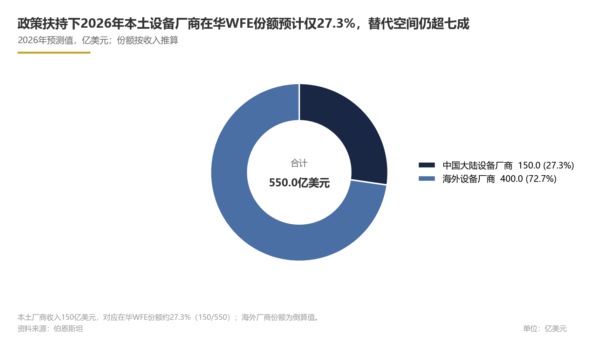
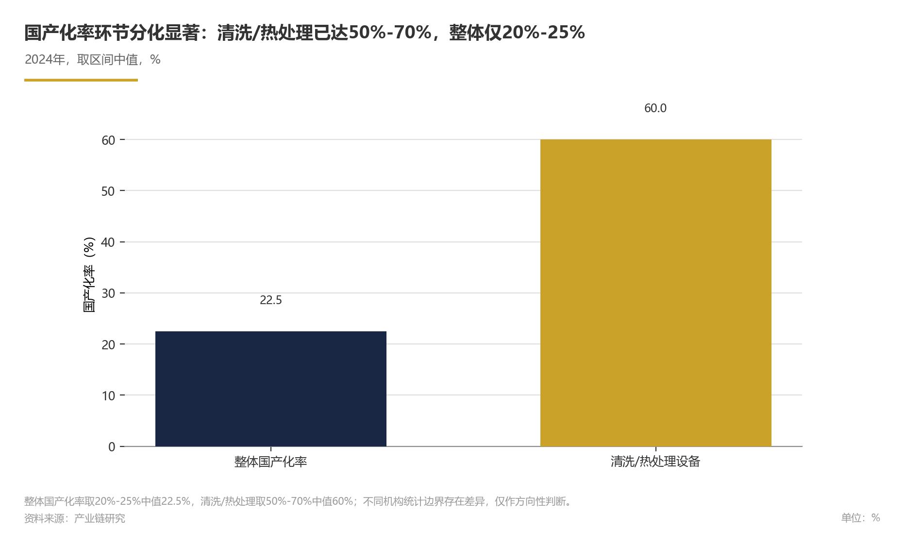
细分设备市场与国产化进程：光刻机、刻蚀设备、薄膜沉积设备等
前道晶圆制造设备是半导体设备行业中技术壁垒最高、价值量最大的核心环节，光刻机、刻蚀设备、薄膜沉积设备构成前道三大主力品类，其中刻蚀设备约占芯片制造设备资本开支的22%（东方证券，事实性判断）。
论证与分析
前道三大核心设备的市场地位与技术特征
半导体前道制造装备按工艺环节划分，包括光刻、干法刻蚀、掺杂、薄膜、平坦化、热处理、湿法、量测检测、工厂辅助设备等九大类，细分品种共计约190种（中科院，事实性判断）。这一"九大类、约190种"的分类框架表明，前道设备是一个高度细分、专业分工明确的产业体系，单一厂商难以覆盖全部品类；这既是国产替代的难点所在，也为不同技术路线的差异化突破提供了空间。
从价值量看，光刻、刻蚀、薄膜沉积三大品类构成前道设备的主体。全球半导体设备市场2025年规模为1328.4亿美元（Fortune Business Insights，事实性判断）；刻蚀设备约占芯片制造设备资本开支的22%（东方证券，事实性判断），两者统计范围不同，均用于说明前道设备的主体地位；刻蚀是前道主要品类之一（推理性判断）。随着制程节点持续微缩、多重曝光工艺普及以及3D NAND堆叠层数持续增加，刻蚀步骤在芯片制造全流程中的权重仍在上升（推理性判断）。
全球刻蚀设备市场保持稳健增长。据Fortune Business Insights数据，2025年全球半导体刻蚀设备市场规模为156.7亿美元，预计2034年将增长至340.7亿美元，2025-2034年复合年增长率为9.10%（事实性判断）。刻蚀设备需求增长的底层驱动力来自三方面：一是先进逻辑芯片的多重曝光工艺使刻蚀步骤数量大幅增加；二是3D NAND闪存堆叠层数持续增加，高深宽比刻蚀成为存储制造的核心工艺难点；三是先进封装中的TSV硅通孔等工艺为刻蚀设备开辟增量市场（推理性判断）。从竞争格局看，全球刻蚀设备市场由海外龙头主导（基于行业共识的推理性判断）。
薄膜沉积设备主要涵盖化学气相沉积（CVD）、物理气相沉积（PVD）与原子层沉积（ALD）三类技术路线。在逻辑芯片进入GAA环绕栅极结构、存储芯片堆叠层数持续攀升的背景下，薄膜沉积的步骤数量、均匀性与台阶覆盖要求同步提升，ALD等具备原子级厚度控制能力的沉积技术重要性显著增强（推理性判断）。值得关注的是，从国内头部厂商在成熟制程的批量交付进展看，薄膜沉积是中国设备国产化进展较快的品类之一（推理性判断）。
光刻机是半导体制造中最核心的设备，其性能直接决定晶圆产线的工艺极限（东方证券，事实性判断）。光刻机涉及光学系统、精密运动台、光源、控制算法等多学科交叉，是半导体制造设备中技术含量最高的品类之一（推理性判断）。从成本结构看，光学类部件占半导体设备BOM成本比重达55.0%（Supplyframe，事实性判断），该比例为全行业设备综合BOM口径，光学主导型设备中占比可能更高；这一特征部分解释了光学系统为何是光刻机乃至量检测等光学主导型设备国产化的最大瓶颈。全球光刻机市场由海外龙头主导，在核心环节占据垄断地位（基于行业共识的推理性判断），国产光刻设备与海外先进机型在分辨率、套刻精度等核心指标上仍存在明显代差（推理性判断，依据：光刻环节处于国产化第三梯队、高度依赖进口）。
各细分设备国产化进程的梯度分化
这一梯度分化格局清晰呈现了国产替代"由易到难、由外围到核心"的推进路径。
各细分环节的国产化进展可归纳为三个梯队：
国内头部设备厂商在刻蚀、薄膜沉积、清洗、热处理四大品类已实现批量收入（推理性判断），其中清洗与热处理已成为支撑国产设备企业收入的基本盘。
第二梯队（加速突破阶段）：刻蚀与薄膜沉积设备。国产厂商已取得较大突破（推理性判断），在成熟制程领域实现批量供货与规模化收入，但先进制程所需的高深宽比刻蚀、高均匀性原子层沉积等高端环节仍处于客户验证与导入阶段，与海外龙头存在技术代差（推理性判断）。
第三梯队（高度依赖进口）：光刻设备与离子注入设备。光刻机技术壁垒极高且直接受海外出口管制影响，国产替代周期最长，当前国产光刻设备主要覆盖成熟制程，先进制程光刻机仍处于自主研发攻关阶段；离子注入设备与光刻类似，国产化进程相对滞后（推理性判断）。
这一梯度格局在企业竞争层面同样清晰。行业呈"一超多强+新锐涌现"格局（推理性判断），尚未出现覆盖全产品线的平台型巨头。
国产化进程的驱动机制与市场空间
国产化进程由三重力量驱动：需求拉动、政策推动与技术积累。
巨大的本土市场为国产设备提供了全球罕见的验证迭代环境——设备只有在晶圆厂量产线上持续运行，才能完成从"可用"到"好用"的跨越（推理性判断）。
据伯恩斯坦2026年1月预测，2026年中国WFE市场规模将达550亿美元，其中中国大陆设备厂商收入预计达150亿美元，同比增长36%（事实性判断），对应在华WFE市场份额约27.3%（推算，基于中国大陆设备厂商收入与中国WFE市场规模的直接比值，未调整海外收入与非WFE业务部分，存在口径偏差）。
政策侧：美国对华半导体出口管制已形成覆盖设备、零部件、人才与服务的全链条封锁体系（事实性判断），先进制程设备及关键零部件获取渠道持续收窄。这一外部约束倒逼下游晶圆厂将国产设备导入从"可选项"变为"必选项"，国产替代正反馈循环已形成：管制趋严→需求转向国产→国产设备获得量产验证机会→性能与可靠性提升→替代范围进一步扩大（推理性判断）。与此同时，中国以《两用物项出口管制条例》与产业基金为支点构建政策对冲框架，为国产设备研发与产业化提供资金与制度支持（事实性判断）。
供给侧：中国设备厂商经过多年积累，已在刻蚀、薄膜沉积、清洗、热处理等品类建立批量交付能力，头部企业业务结构持续向集成电路设备聚焦（推理性判断）。但从全球看，海外龙头在前道核心设备领域的技术积淀、专利壁垒与客户关系仍构成显著的先发优势（推理性判断）。
其一，刻蚀与薄膜沉积设备将成为国产化率提升最快的细分赛道。支撑因素包括：存储芯片超级周期带动3D NAND扩产（推测性前提），高深宽比刻蚀与薄膜沉积设备需求高增；国产厂商在成熟制程已具备批量交付能力，正沿"成熟制程放量→先进制程验证→高端突破"路径推进；海外管制趋严进一步加速下游导入意愿。在当前第二梯队加速突破的基础上，2026-2027年（预测区间）刻蚀与薄膜沉积设备的国产化率有望显著提升（情景假设，假设前提：下游扩产节奏符合预期、无重大技术路线变化、海外管制力度不放松）。对于产业链相关方，建议重点关注具备先进制程验证进展的刻蚀与沉积设备企业的放量节奏，这一赛道将是未来两年国产替代弹性最大的方向（推理性判断）。
其二，光刻设备仍是最关键的战略攻坚点。在出口管制持续收紧的背景下，光刻国产替代将沿"成熟制程逐步突破、先进制程长期攻坚"的阶梯路径演进；光刻设备的突破节奏将在很大程度上决定中国半导体制造所能达到的制程天花板，其战略意义超越单纯的市场份额指标（推理性判断）。
其三，先进封装设备是中国设备厂商的差异化突围赛道。先进封装设备市场规模2026年预计达420亿美元，较2025年增长9%（GEP Research，事实性判断）。先进封装的技术路线尚未完全收敛，部分环节海外先发优势相对前道核心设备较弱，为中国设备厂商提供了差异化进入的窗口期（推理性判断）。
决策启示：对产业参与者，建议优先布局刻蚀、薄膜沉积、先进封装设备三大赛道，关注具备"成熟制程规模化收入+先进制程验证突破"双重能力的企业；对政策制定者，光学类零部件占设备BOM成本达55.0%（Supplyframe，事实性判断），应作为产业链补链强链的重中之重，同步推进射频类、精密运动控制类等核心零部件的国产配套（推理性判断）。
数据支撑
Exhibit 9｜细分设备市场与国产化进程：光刻机、刻蚀设备、薄膜沉积设备等
| 指标 | 数值 | 来源 | 统计口径 |
|---|---|---|---|
| 前道制造装备分类数量 | 9类 | 中科院 | 中科院分类框架，中国 |
| 前道制造装备细分品种数量 | 190种 | 中科院 | 中科院分类框架，中国 |
| 全球半导体设备市场规模（2025年） | 1328.4亿美元 | Fortune Business Insights | Fortune Business Insights半导体制造设备口径，全球 |
| 刻蚀设备占芯片制造设备资本开支比重 | 22% | 东方证券 | 芯片制造设备资本开支口径，全球 |
| 全球半导体刻蚀设备市场规模（2025年） | 156.7亿美元 | Fortune Business Insights | FBI刻蚀设备口径，全球 |
| 全球半导体刻蚀设备市场规模预测（2034年） | 340.7亿美元 | Fortune Business Insights | FBI刻蚀设备口径，全球（预测值） |
| 全球刻蚀设备市场年复合增长率（2025-2034年） | 9.10% | Fortune Business Insights | FBI刻蚀设备口径，2025-2034年 |
| 光学类部件占半导体设备BOM成本比重 | 55.0% | Supplyframe | 全行业设备综合BOM口径，全球 |
| 中国半导体设备整体国产化率（2024年） | 20%-25% | 产业链研究 | 产业链估算口径，中国（按销售额） |
| 清洗/热处理设备国产化率 | 50%-70% | 产业链研究 | 产业链估算口径，中国（按销售额） |
| 中国大陆半导体设备销售额（2024年） | 495.4亿美元 | SEMI | SEMI设备总口径，中国大陆（2024年） |
| 中国大陆半导体设备销售额同比增速（2024年） | 35.37% | SEMI | SEMI设备总口径，中国大陆（2024年同比） |
| 中国大陆占全球设备市场比重 | 42.29% | SEMI | SEMI设备总口径，中国大陆销售额/全球销售额（2024年） |
| 全球半导体设备市场规模（2024年，倒推值） | 约1171亿美元 | 推算 | 根据SEMI中国大陆销售额495.4亿美元及42.29%占比倒推；与2025年1328.4亿美元（Fortune Business Insights）为不同年份且统计口径不同，不可直接配比 |
| 中国半导体设备市场规模（2025年） | 559亿美元 | 德勤 | 德勤设备口径，中国（2025年） |
| 中国WFE市场规模预测（2026年） | 550亿美元 | 伯恩斯坦 | WFE口径，中国（2026年预测） |
| 中国大陆设备厂商收入预测（2026年） | 150亿美元 | 伯恩斯坦 | WFE口径，中国大陆设备厂商（2026年预测，含非WFE及海外收入，存在口径偏差） |
| 中国大陆设备厂商收入同比增速（2026年） | 36% | 伯恩斯坦 | WFE口径，中国大陆设备厂商（2026年预测） |
| 在华WFE市场份额（2026年推算） | 27.3% | 推算 | 基于中国大陆设备厂商收入150亿美元与中国WFE市场规模550亿美元直接比值；未调整海外收入与非WFE业务，存在口径偏差 |
| 海外厂商在中国大陆设备市场份额 | 75%-80% | 推算 | 基于前述产业链研究的国产化率（20%-25%）倒推；未区分外资在华fab采购与国产设备厂商境外销售，存在口径偏差 |
| 先进封装设备市场规模预测（2026年） | 420亿美元 | GEP Research | GEP先进封装设备口径，全球（2026年预测） |
| 先进封装设备市场规模增速（2026年） | 9% | GEP Research | GEP先进封装设备口径，全球（2026年同比） |
| 混合键合设备细分市场增长率 | >25% | GEP Research | GEP先进封装设备口径，全球 |
风险提示
本章分析面临以下不确定性与假设前提：
- 口径差异风险：全球刻蚀设备市场规模采用Fortune Business Insights口径（156.7亿美元，2025年），与SEMI设备总口径的细分拆分并不完全一致；不同机构对"刻蚀设备"的统计边界（是否包含去胶设备、是否包含零部件更换服务等）存在差异，横向对比时需注意口径一致性。
2.不同测算方法（按设备销售额、按设备数量、按晶圆厂采购金额）可能得出显著不同的结果，本章引用时已标注来源，读者应将其视为量级参考而非精确值。
- 推测性判断的前提条件：关于2026-2027年（预测区间）刻蚀/薄膜沉积设备国产化率显著提升、中国设备厂商在华WFE份额进一步提升等前瞻判断，依赖于下游扩产节奏符合预期、海外管制力度不出现重大放松、国产设备先进制程验证顺利、海外龙头不采取激进的价格或本地化应对策略等前提条件，任一条件变化均可能导致实际进度偏离预期。
- 海外龙头竞争响应不确定：海外设备厂商可能通过推出针对中国市场的"特供版"设备、在中国设立本地化生产基地、或通过专利诉讼与技术封锁等方式维持市场份额，对国产替代进度构成竞争性压制（推测性判断）。
- 光刻设备时间表不确定：光刻机的技术突破涉及光学系统、精密运动台、光源、浸没系统等多项"卡脖子"环节，国产替代的时间表存在高度不确定性，本章未对光刻设备国产化率给出量化预测，相关判断应以厂商实际验证进展为准。
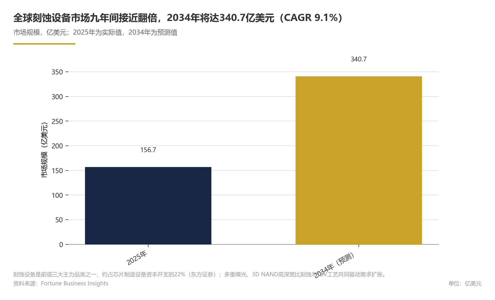
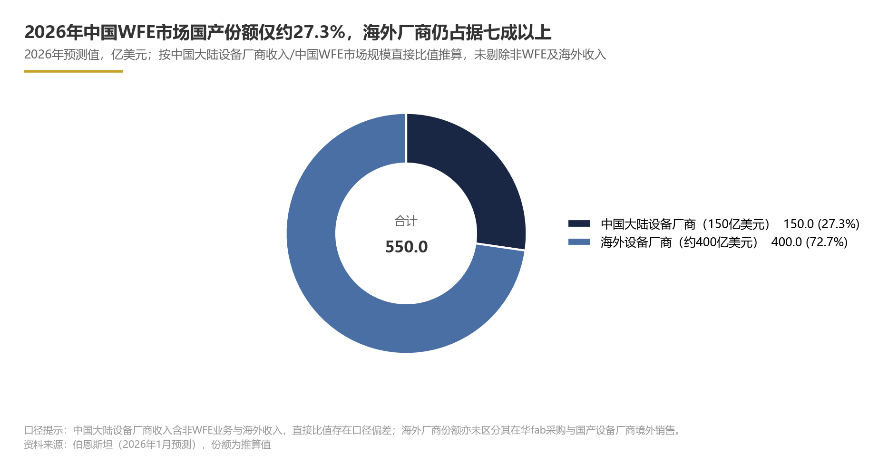
风险与展望：行业周期、技术迭代、供应链与地缘政治风险及预测
半导体设备行业正处于AI算力驱动的新一轮景气上行周期，全球市场规模2025年达1330亿美元、同比增长13.7%（SEMI，事实性判断），SEMI预计2026年将增至1560亿美元。然而，行业的确定性增长并未消除风险——周期性资本开支波动、技术路线切换、上游零部件供应链受制于人以及地缘政治封锁的持续升级，构成未来两年行业发展必须面对的四大核心风险维度。
论证与分析
行业周期：景气上行确立，结构性分化与传导时滞构成核心不确定性
全球半导体设备市场2025年销售额达1330亿美元，同比增长13.7%（SEMI，事实性判断）。SEMI预计2026年销售额将进一步提升至1560亿美元，2027年达1560亿美元，增长动能主要来自AI相关投资驱动的尖端逻辑芯片与存储芯片扩产（推理性判断）。在需求端确定性较强的背景下，周期风险主要体现为三个层面。
第一，设备市场增速的斜率正在放缓。增速回落并非需求萎缩，而是基数抬升叠加资本开支节奏正常化的结果（推理性判断），行业参与者需调整对持续超高速增长的预期。
第二，设备市场与终端市场之间存在明显的增速传导时滞，增加了短期需求判断的难度。据世界半导体贸易统计组织（WSTS）预测，2026年全球半导体市场规模将突破1.51万亿美元（WSTS，预测性判断），终端需求的扩张为设备市场的持续增长提供了需求基础。但设备市场的资本开支决策往往滞后于终端需求信号，若终端需求增速在2026年下半年出现回落，设备市场的调整可能延迟至2027年显现。
第三，结构性分化加大了个别细分领域的波动风险。若存储芯片价格进入下行周期或AI服务器扩容不及预期，存储相关设备的需求弹性将显著大于逻辑设备，设备行业可能从全面增长切换为结构性增长。
对中国设备厂商而言，这是份额提升的窗口期：据伯恩斯坦预测，2026年中国本土设备厂商在华WFE市场份额（WFE口径）约27.3%；
技术迭代：竞争焦点从单点参数转向系统协同，先进封装打开差异化窗口
前道晶圆制造设备中，光刻、刻蚀、薄膜沉积构成技术壁垒最高、价值量最大的三大核心品类，其中刻蚀设备约占芯片制造设备资本开支的22%（东方证券，事实性判断）。我们预计，未来两年内技术竞争将从单一设备参数竞赛转向光刻-刻蚀-沉积的系统协同，以及先进封装设备的创新；这一转变在技术层面为中国设备厂商提供了差异化突围的机会（推理性判断）。该判断的依据是，先进制程与先进封装对设备间匹配和协同优化的要求持续提升，单一参数领先难以决定整体竞争力。
我们判断，先进封装设备是当前确定性较高的增长赛道（推理性判断）。据GEP Research数据，2026年先进封装设备市场规模预计达420亿美元，较2025年增长9%（GEP Research，预测性判断）；混合键合被行业普遍视为替代传统微凸点互连的核心工艺方向，是2.5D/3D先进封装的关键设备环节（行业普遍判断，推理性判断）。该领域的快速放量为中国设备厂商提供了相对前道高端设备更低的进入门槛。
技术迭代的风险同样不容忽视。其一，先进制程及先进封装技术迭代较快，若下游客户的技术路线发生变化——例如混合键合与其他互连技术路线竞争出现替代性结果——已投入研发的设备厂商将面临技术路线切换带来的研发投入沉没风险。其二，光学类部件占半导体设备BOM成本比重达55.0%（Supplyframe，事实性判断），高端光学零部件仍是国产替代的硬瓶颈，光刻、量检测等光学主导型设备在未来两年内仍将是攻坚重点而非放量环节。
前瞻判断：刻蚀与薄膜沉积设备大概率将成为未来两年内国产化率提升最快的细分赛道（基于产业链调研的推断，推理性判断）。中国设备厂商在这两个领域已形成技术积累，且下游晶圆厂在供应链安全压力下具备更强的国产设备导入意愿。建议国内设备厂商在未来两年内在先进封装（尤其是混合键合）领域加快布局：与头部封测厂商开展联合验证，设置明确的导入里程碑（如样机验证、产线小批量试用、批量交付），并通过产业投资或联合研发明确合作路径，以对冲前道高端设备受限带来的增长天花板。
供应链风险：上游零部件瓶颈与供应链重构的双重压力
半导体设备产业链呈“上游零部件决定性能上限、中游整机主导集成、下游晶圆厂资本开支驱动需求”的全球化分工格局。当前产业链核心瓶颈集中于上游高端零部件供给受限与中游高端整机国产化率偏低。从成本结构看，光学类部件占半导体设备BOM成本的55.0%（Supplyframe，事实性判断），是最主要的成本与性能约束环节；这两项数据揭示了供应链风险的两个维度：高端光学零部件的高度进口依赖，以及大宗原材料价格波动对设备厂商利润的侵蚀。
从出口管制政策持续收紧及主要经济体供应链本地化趋势看，供应链重构正在加速（推理性判断，关键假设：出口管制政策维持趋严态势，主要经济体继续推进供应链本地化）。
前瞻判断：未来两年内，产业链重构将沿国产零部件配套、中游整机国产化率提升、下游先进封装设备三条主线展开（推理性判断，中等置信度）。需要关注的供应链风险是，若出口管制从先进制程进一步扩展至成熟制程，国产设备在成熟制程的替代窗口也可能承压，因为成熟制程同样依赖部分进口零部件和材料。供应链安全的本质是“卡脖子”环节的逐一突破，效率取决于高端光学零部件、精密运动系统、射频电源等核心环节的国产化进展。
地缘政治：全链条封锁下的政策对冲与情景推演
地缘政治已取代纯市场因素，成为影响半导体产业战略的首要变量（推理性判断）。从美国商务部产业与安全局（BIS）实体清单及《出口管理条例》（EAR）相关规则看，美国对华半导体出口管制已形成覆盖设备、零部件、人才与服务的全链条封锁体系（事实性判断）。美国半导体产品全球份额达50.4%（SIA，2024年，事实性判断），其在全球半导体供应链中的主导地位意味着出口管制政策的任何边际变化都将对全球设备市场产生系统性影响。
中国的政策对冲框架正在成型。以中国《两用物项出口管制条例》为法律支点、以产业基金为资本工具，中国构建了应对技术封锁的“以管制对管制、以支持对限制”的双层策略（事实性判断）。产业整合进程明显加速：据投中嘉川CVSource数据（统计年份：2025年），中国半导体行业并购金额合计达2796.65亿元，并购案例496起。并购整合有助于集中资源突破关键环节，是中国设备行业从“一超多强+新锐涌现”格局走向平台型巨头的必要路径。
政策变量的不确定性是未来两年行业竞争格局的首要外部变量（推测性判断）。我们推演两种情景：
情景一（基准情景，主观概率约六成）：出口管制维持2025年现有强度，主要限制先进制程设备对华出口，成熟制程设备仍可流通。
情景二（升级情景，主观概率约四成）：出口管制进一步扩展至成熟制程设备及更多零部件。短期来看，中国晶圆厂扩产节奏将受到直接影响，设备交付周期拉长；中长期来看，管制升级将强化国产替代的正反馈循环——下游晶圆厂被迫加速导入国产设备，国产设备厂商获得更多验证迭代机会，反而可能缩短高端环节的突破时间。这一逻辑已部分为历史经验所验证（推测性判断）。
前瞻判断：即使地缘政治紧张升级，中国半导体设备行业仍将维持增长，但增长的节奏和结构会发生变化——成熟制程国产化率提升可能加速，先进制程设备的发展时间窗口将被拉长。建议利益相关方将出口管制政策走向、存储资本开支持续性以及先进封装设备国产化进展作为未来两年三大核心跟踪指标。
数据支撑
Exhibit 10｜风险与展望：行业周期、技术迭代、供应链与地缘政治风险及预测
| 数据指标 | 数值 | 时间口径 | 来源 | 认知层级 |
|---|---|---|---|---|
| 全球半导体设备市场规模 | 1330亿美元 | 2025年 | SEMI | 事实性判断 |
| 全球半导体设备市场规模同比增速 | 13.7% | 2025年 | SEMI | 事实性判断 |
| 全球半导体制造设备销售额预测 | 1560亿美元 | 2026年 | SEMI | 预测性判断 |
| 全球半导体制造设备销售额预测 | 1560亿美元 | 2027年 | SEMI | 预测性判断 |
| 中国大陆半导体设备销售额 | 495.4亿美元 | 2024年 | SEMI | 事实性判断 |
| 中国大陆占全球设备市场比重 | 42.29% | 2024年 | SEMI | 事实性判断 |
| 中国WFE市场规模预测 | 550亿美元 | 2026年 | 伯恩斯坦 | 预测性判断 |
| 中国大陆设备厂商收入预测 | 150亿美元 | 2026年 | 伯恩斯坦 | 预测性判断 |
| 中国大陆设备厂商收入同比增速 | 36% | 2026年 | 伯恩斯坦 | 预测性判断 |
| 中国半导体设备整体国产化率 | 20%-25% | 2024年 | 产业链调研推断 | 推测性判断 |
| 清洗/热处理设备国产化率 | 50%-70% | 2024年 | 产业链调研推断 | 推测性判断 |
| 刻蚀设备占芯片制造设备资本开支比重 | 22% | — | 东方证券 | 事实性判断 |
| 先进封装设备市场规模预测 | 420亿美元 | 2026年 | GEP Research | 预测性判断 |
| 混合键合设备细分市场增速 | >25% | 2026年 | GEP Research | 预测性判断 |
| 光学类部件占半导体设备BOM成本比重 | 55.0% | — | Supplyframe | 事实性判断 |
| 工程塑料占半导体设备生产成本比重 | 10%-20% | — | 亿欧 | 事实性判断 |
| 美国半导体产品全球份额 | 50.4% | 2024年 | SIA | 事实性判断 |
| 中国半导体行业并购金额 | 2796.65亿元 | 2025年 | 投中嘉川CVSource | 事实性判断 |
| 中国半导体行业并购案例数 | 496起 | 2025年 | 投中嘉川CVSource | 事实性判断 |
| 全球半导体设备市场同比增速（按SEMI预测值推算） | 约9% | 2026年 | SEMI预测值推算 | 推理性判断 |
| 全球半导体设备市场同比增速（按SEMI预测值推算） | 7%-8% | 2027年 | SEMI预测值推算 | 推理性判断 |
| 全球半导体设备市场同比增速（按SEMI预测值推算） | 约7.6% | 2027年 | SEMI预测值推算 | 推理性判断 |
| 全球半导体市场规模预测 | 1.51万亿美元 | 2026年 | WSTS | 预测性判断 |
| 中国大陆半导体设备销售额同比增速 | 35.37% | 2024年 | SEMI | 事实性判断 |
| 中国大陆设备厂商在华WFE份额 | 27.3% | 2026年 | 伯恩斯坦 | 预测性判断 |
| 中国大陆设备厂商在华WFE份额预测 | 30%-32% | 2027年 | 本章推算（基于伯恩斯坦预测） | 推测性判断 |
| 刻蚀与薄膜沉积设备国产化率提升幅度预测 | 3-5个百分点 | 2027年 | 本章预测 | 推测性判断 |
| 中国本土设备厂商在华WFE收入份额年均提升幅度 | 3-5个百分点 | 2026-2027年 | 本章推算 | 推测性判断 |
| 海外厂商在华合计份额 | 75%-80% | 2024年 | 基于整体国产化率推算 | 推测性判断 |
| 全球半导体设备市场规模（Fortune Business Insights口径） | 1328.4亿美元 | 2025年 | Fortune Business Insights | 事实性判断 |
| 先进封装设备市场规模同比增速 | 9% | 2026年 | GEP Research | 预测性判断 |
| 2026年全球设备市场增速较2025年回落幅度 | 近5个百分点 | 2026年 | SEMI预测值推算 | 推理性判断 |
风险提示
本章分析建立在以下假设前提之上，相关不确定性需在决策中予以关注：
行业景气不及预期风险。全球半导体设备市场的增长高度依赖AI算力投资与存储芯片扩产，若AI服务器扩容节奏放缓、存储价格进入下行周期或全球宏观经济恶化，晶圆厂资本开支可能推迟，2026-2027年设备市场实际销售额将低于SEMI预测值。
技术迭代及工艺路线变化风险。先进制程与先进封装技术迭代较快，若下游客户技术路线发生替代性变化（如混合键合与其他互连技术路线竞争、EUV光刻向更高数值孔径演进），已布局相关设备的厂商可能面临研发投入沉没与市场份额重排风险。
出口管制升级风险。政策变量是未来两年行业竞争格局的首要外部变量，若美国将管制范围从先进制程扩展至成熟制程设备及更多零部件，中国晶圆厂扩产节奏与设备厂商的海外零部件采购将受到直接冲击。该风险发生的主观概率约四成，但影响烈度显著高于其他不确定性因素。
数据口径差异风险。SEMI是行业最常用的半导体设备总设备口径，Fortune Business Insights的品类边界与SEMI不同，两者并非严格冲突；本报告统一以SEMI口径为准，读者进行跨机构比较时需注意口径一致性。
国产化率预测的假设依赖。任一前提发生变化，该预测均需下修。
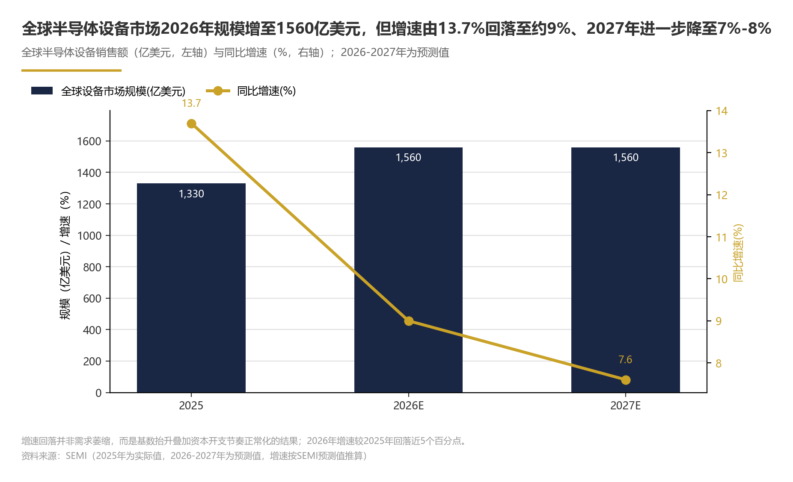
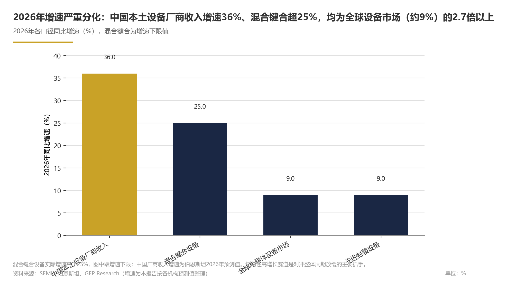